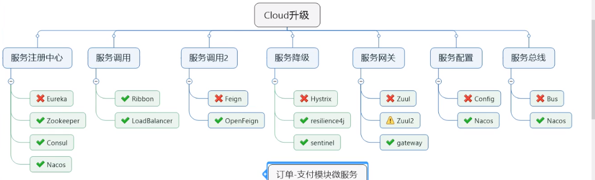
环境配置 开启热部署 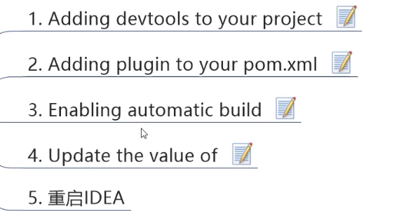
1 2 3 4 5 6 <dependency > <groupId > org.springframework.boot</groupId > <artifactId > spring-boot-devtools</artifactId > <scope > runtime</scope > <optional > true</optional > </dependency >
2、开启idea自动编译模式 idea默认没有开启自动编译。具体过程如下。
进入设置setting，Build,Execut, Deployment -> Compiler 勾选右侧的Build Project automatically
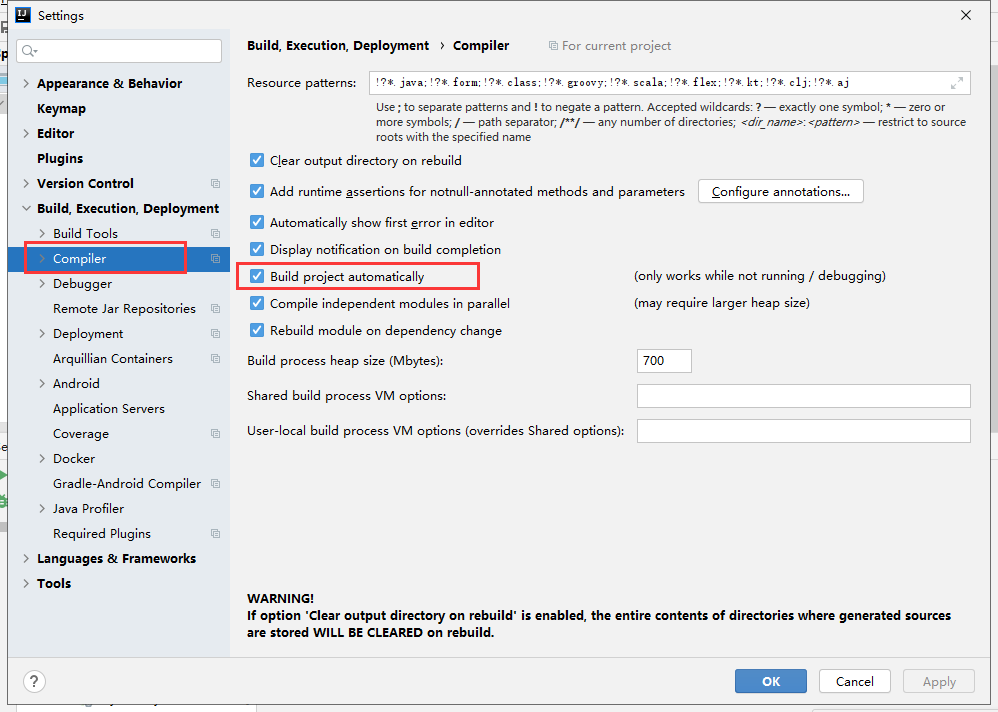
ctrl+shift+alt+“/” 打开
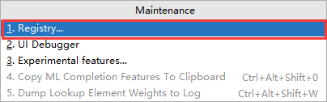
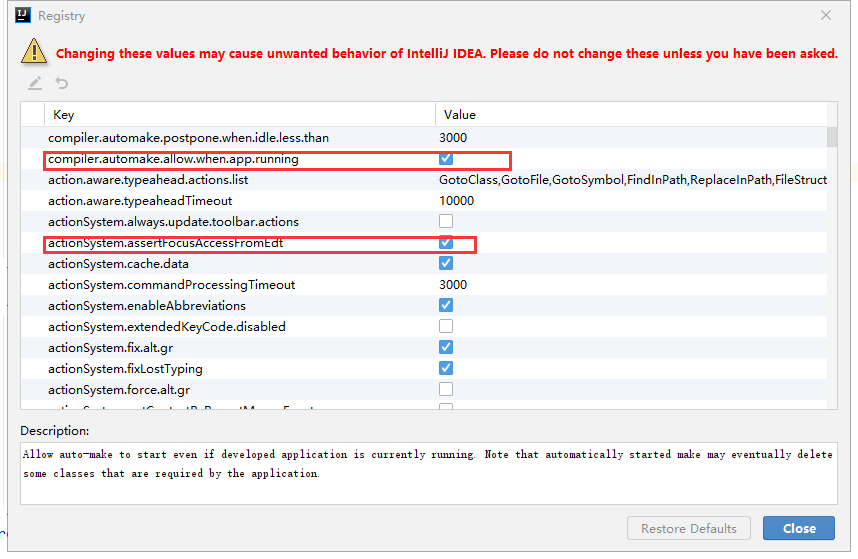
SpringCloud 停更说明
Eureka停用,可以使用zk作为服务注册中心
服务调用,Ribbon准备停更,代替为LoadBalance
Feign改为OpenFeign
Hystrix停更,改为resilence4j或者阿里巴巴的sentienl
Zuul改为gateway
服务配置Config 改为 Nacos
服务总线Bus 改为Nacos
服务注册与发现 Eureka 基础知识 一、Eureka 简介 Eureka 是 Netflix 开发的服务发现框架，本身是一个基于REST的服务，主要用于定位运行在AWS域中的中间层服务，以达到负载均衡和中间层服务故障转移的目的。SpringCloud 将它集成在其子项目 spring-cloud-netflix 中，以实现SpringCloud的服务发现功能。 n
1、Eureka 组件 Eureka 包含两个组件：Eureka Server 和 Eureka Client。 Eureka采用了CS的设计架构，Eureka Server 作为服务注册功能的服务器，它是服务注册中心。而系统中的其他微服务，使用 Eureka 的客户端连接到 Eureka Server 并维持心跳连接。这样系统的维护人员就可以通过 Eureka Server 来监控系统中各个微服务是否正常运行。
1.1 Eureka Server Eureka Server 提供服务注册服务，各个微服务节点通过配置启动后，会在 EurekaServer 中进行注册，这样EurekaServer 中的服务注册表中将会存储所有可用服务节点的信息，服务节点的信息可以在界面中直观看到。
1.2 EurekaClient EurekaClient 通过注册中心进行访问，是一个Java客户端，用于简化 Eureka Server 的交互，客户端同时也具备一个内置的、使用轮询(round-robin)负载算法的负载均衡器。在应用启动后，将会向Eureka Server发送心跳(默认周期为30秒)。如果Eureka Server在多个心跳周期内没有接收到某个节点的心跳，EurekaServer将会从服务注册表中把这个服务节点移除（默认90秒)
在服务注册与发现中，有一个注册中心。当服务器启动的时候，会把当前自己服务盟的信息比如服务地址通讯地址等以别铭方式注册到注册中心上。另一方(消费者服务提供者)，以该别名的方式去注册中心上获取到实际的服务通讯地址，然后再实现本地RPC调用RPC远程调用框架核心设计思想:在于注册中心，因为使用注册中心管理每个服务与服务之间的一个依赖关系(服务治理概念)。在任何rpc远程框架中，都会有一个注册中心(存放服务地址相关信息(接口地址))
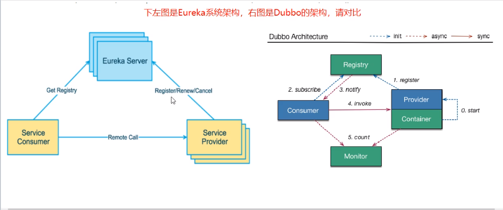
二、单机 Eureka 搭建步骤 1、创建项目 创建项目：cloud_eureka_server_7001
2、引入 POM 1 2 3 4 5 <dependency > <groupId > org.springframework.cloud</groupId > <artifactId > spring-cloud-starter-netflix-eureka-server</artifactId > </dependency >
3、配置文件 1 2 3 4 5 6 7 8 9 10 11 12 13 14 server: port: 7001 eureka: instance: hostname: localhost client: register-with-eureka: false fetch-registry: false service-url: defaultZone: http://${eureka.instance.hostname}:${server.port}/eureka/
4、主启动类 1 2 3 4 5 6 7 8 9 10 11 12 13 14 package com.wj.springcloud.alibaba;import org.springframework.boot.SpringApplication;import org.springframework.boot.autoconfigure.SpringBootApplication;import org.springframework.cloud.netflix.eureka.server.EnableEurekaServer;@SpringBootApplication @EnableEurekaServer public class EurekaMain7001 { public static void main (String[] args) { SpringApplication.run(EurekaMain7001.class,args); } }
5、此时就可以启动当前项目了 访问 ：http://localhost:7001/
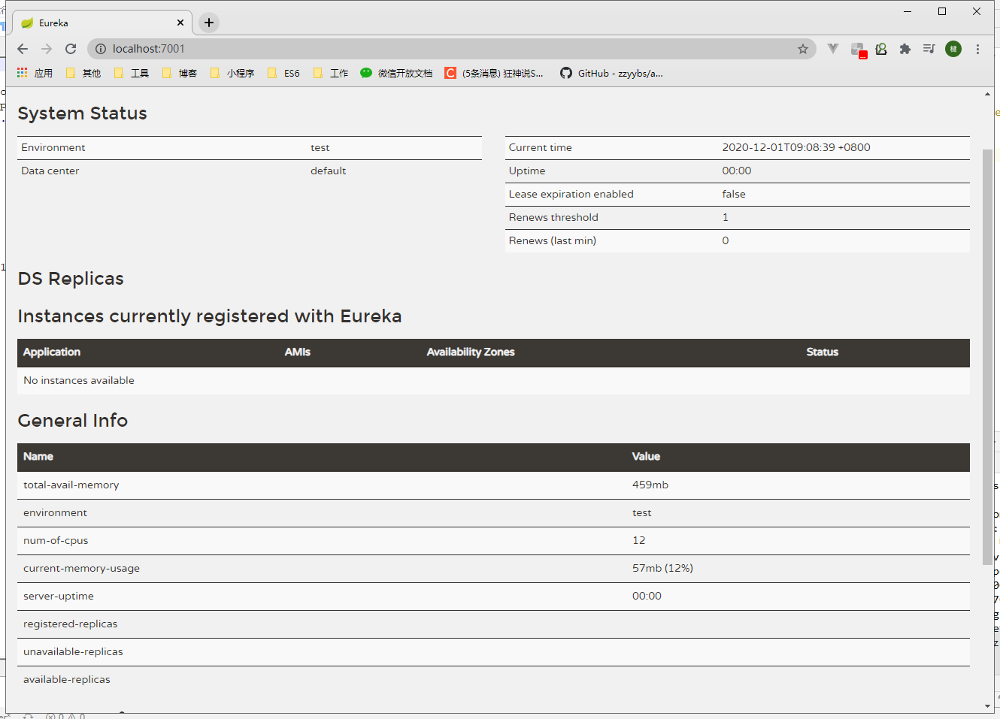
6、支付微服务注册到Eureka Server上 1、修改 cloud-provider-payment8001主启动类
1 2 3 4 5 6 7 8 9 10 11 12 13 package com.wj.springcloud.alibaba;import org.springframework.boot.SpringApplication;import org.springframework.boot.autoconfigure.SpringBootApplication;import org.springframework.cloud.netflix.eureka.EnableEurekaClient;@SpringBootApplication @EnableEurekaClient public class PaymentMain8001 { public static void main (String[] args) { SpringApplication.run(PaymentMain8001.class,args); } }
2、引入pom
1 2 3 4 5 <dependency > <groupId > org.springframework.cloud</groupId > <artifactId > spring-cloud-starter-netflix-eureka-client</artifactId > </dependency >
3、修改配置文件
1 2 3 4 5 6 7 8 eureka: client: register-with-eureka: true fetchRegistry: true service-url: defaultZone: http://localhost:7001/eureka
4、启动 cloud-provider-payment8001
Eureka Server 中已经注册了 cloud-provider-payment8001
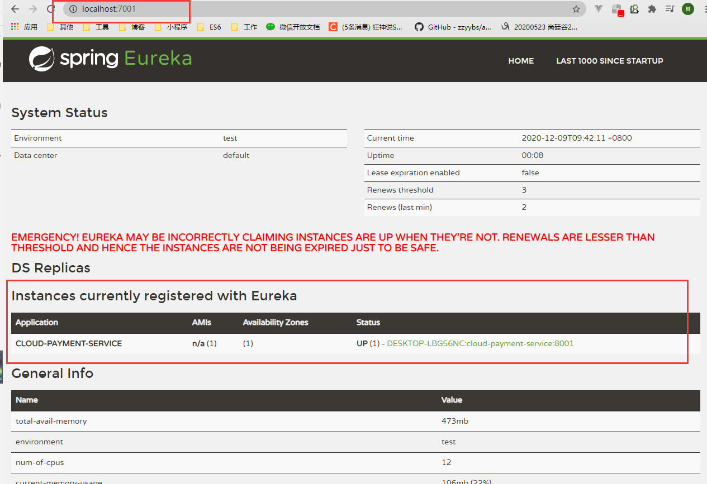
5、仿照 cloud-provider-payment8001，修改 cloud-consumer-order80，将 cloud-consumer-order80 注册到 Eureka Server中
三、集群 Eureka 搭建步骤 Eureka Server注册中心集群中每个节点都是平等的，集群中的所有节点同时对外提供服务的发现和注册等功能。同时集群中每个Eureka Server节点又是一个微服务，也就是说，每个节点都可以在集群中的其他节点上注册当前服务。又因为每个节点都是注册中心，所以节点之间又可以相互注册当前节点中已注册的服务，并发现其他节点中已注册的服务 。
1、集群构建原理 互相注册，相互守望
2、构建 cloud_eureka_server_7002 cloud_eureka_server_7001 和 cloud_eureka_server_7002 代码基本相同，只是配置文件有区别
cloud_eureka_server_7001
1 2 3 4 5 6 7 8 9 10 11 12 13 server: port: 7001 eureka: instance: hostname: eureka7001.com client: register-with-eureka: false fetch-registry: false service-url: defaultZone: http://www.eureka7002.com:7002/eureka/
cloud_eureka_server_7002
1 2 3 4 5 6 7 8 9 10 11 12 13 server: port: 7002 eureka: instance: hostname: eureka7002.com client: register-with-eureka: false fetch-registry: false service-url: defaultZone: http://www.eureka7001.com:7001/eureka/
3、修改宿主机，host文件，来模拟多个主机
C:\Windows\System32\drivers\etc windows中添加这样的配置
1 2 127.0.0.1 www.eureka7001.com 127.0.0.1 www.eureka7002.com
4、访问 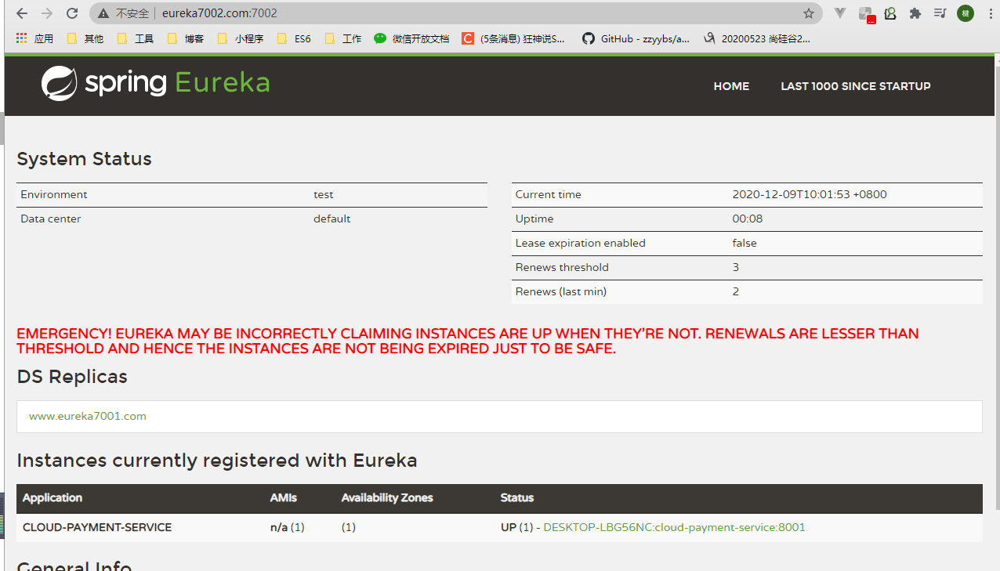
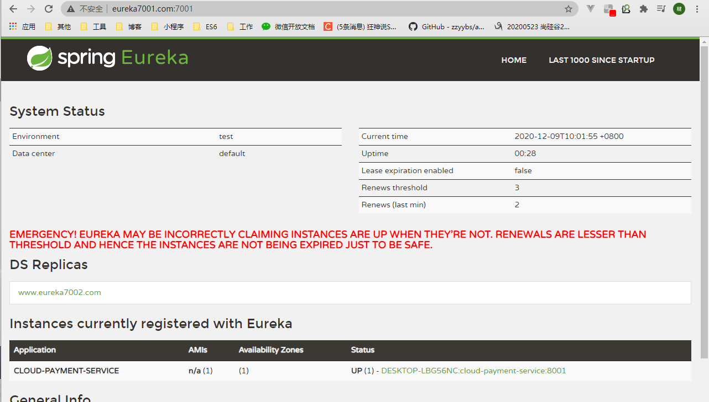
5、将支付服务 cloud-provider-payment8001 微服务发布到上面2台Eureka集群配置中 1 2 3 4 5 6 7 8 9 10 11 12 13 14 15 16 17 18 19 20 21 22 23 24 25 26 server: port: 8001 spring: application: name: cloud-payment-service datasource: type: com.alibaba.druid.pool.DruidDataSource driver-class-name: com.mysql.cj.jdbc.Driver url: jdbc:mysql://localhost:3306/springcloud_zy?useUnicode=true&characterEncoding=utf-8&useSSL=false&serverTimezone=UTC username: root password: 123456 mybatis: mapperLocations: classpath:mapper/*.xml type-aliases-package: com.wj.springcloud.entities eureka: client: register-with-eureka: true fetchRegistry: true service-url: defaultZone: http://eureka7001.com:7001/eureka,http://eureka7002.com:7002/eureka
6、将订单服务 cloud-consumer-order80 微服务发布到上面2台Eureka集群配置中 1 2 3 4 5 6 7 8 9 10 11 12 13 14 15 16 17 18 server: port: 80 spring: application: name: cloud-consumer-order eureka: client: register-with-eureka: true fetchRegistry: true service-url: defaultZone: http://eureka7001.com:7001/eureka,http://eureka7002.com:7002/eureka
测试：
先启动 cloud_eureka_server_7001, cloud_eureka_server_7002，在启动 cloud-provider-payment8001，最后启动 cloud-consumer-order80
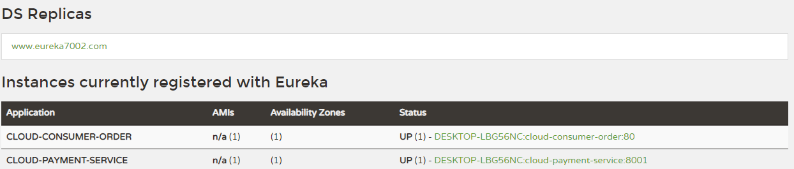
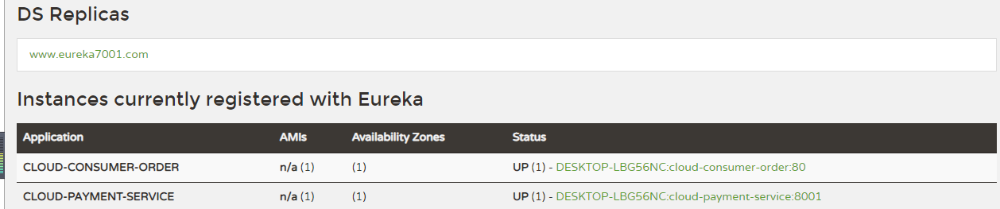
四、将支付微服务配置成集群 1、创建 cloud-provider-payment8002 2、复制 cloud-provider-payment8001 到 cloud-provider-payment8002 3、修改 application.yml 文件，主要是修改 端口号，修改为 8002 4、修改 cloud-consumer-order80 修改 cloud-consumer-order80，使其负载均衡的访问 cloud-provider-payment8001 和 cloud-provider-payment8002
1 2 3 4 5 6 7 8 9 10 11 12 13 14 15 16 17 18 19 20 21 22 23 24 25 26 27 28 29 30 31 32 33 34 35 36 37 package com.wj.springcloud.controller;import com.wj.springcloud.entities.CommonResult;import com.wj.springcloud.entities.Payment;import com.wj.springcloud.lb.LoadBalancer;import lombok.extern.slf4j.Slf4j;import org.springframework.cloud.client.ServiceInstance;import org.springframework.cloud.client.discovery.DiscoveryClient;import org.springframework.http.ResponseEntity;import org.springframework.web.bind.annotation.GetMapping;import org.springframework.web.bind.annotation.PathVariable;import org.springframework.web.bind.annotation.RestController;import org.springframework.web.client.RestTemplate;import javax.annotation.Resource;import java.net.URI;import java.util.List;@RestController @Slf4j public class OrderController { public static final String PAYMENT_URL = "http://CLOUD-PAYMENT-SERVICE" ; @Resource private RestTemplate restTemplate; @GetMapping("/consumer/payment/create") public CommonResult<Payment> create (Payment payment) { return restTemplate.postForObject(PAYMENT_URL + "/payment/create" , payment, CommonResult.class); } @GetMapping("/consumer/payment/get/{id}") public CommonResult<Payment> getPayment (@PathVariable("id") Long id) { return restTemplate.getForObject(PAYMENT_URL + "/payment/get/" + id, CommonResult.class); } }
注意这样还不可以,需要让RestTemplate开启负载均衡注解,还可以指定负载均衡算法,默认轮询
1 2 3 4 5 6 7 8 9 @Configuration 、public class ApplicationContextConfig { @Bean @LoadBalanced public RestTemplate getRestTemplate () { return new RestTemplate (); } }
5、测试 访问 ：http://localhost/consumer/payment/get/32，默认使用 轮询方式
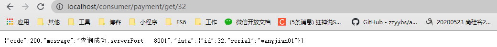
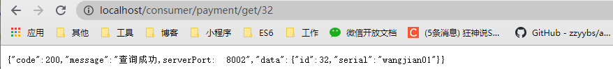
五、actuator 微服务信息的完善 主机的健康检查
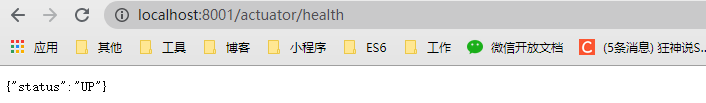
1、主机名称和服务名称的修改
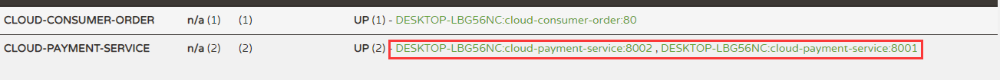
修改配置文件
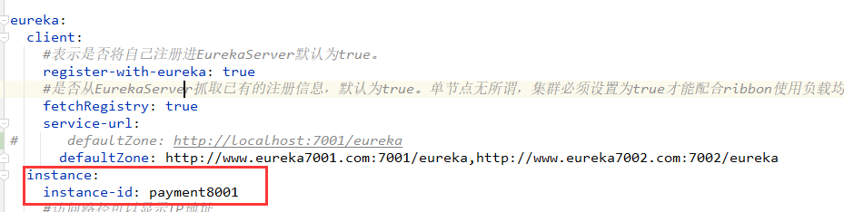
修改 后
同样修改 8002
2、访问信息有IP 提示 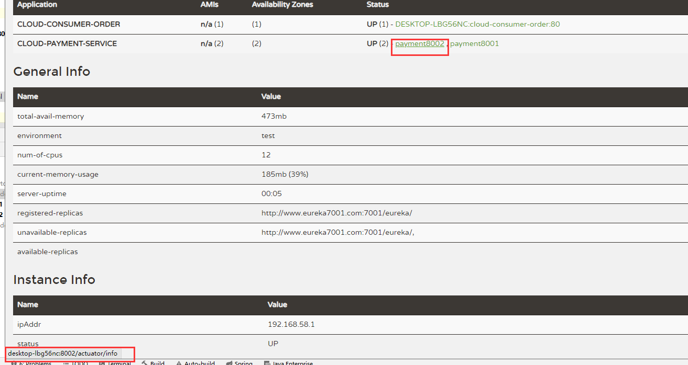
配置文件中修改
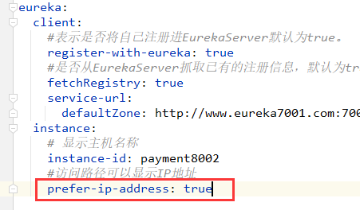
修改后测试
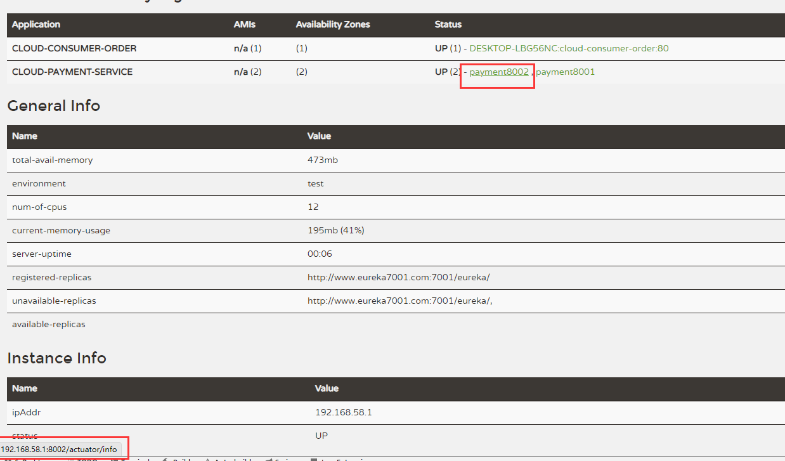
六、服务发现 Discovery 对于注册进eureka里面的微服务，可以通过服务发现来获得该服务的信息
1、修改 cloud-provider-payment8001 的controller 1 2 3 4 5 6 7 8 9 10 11 12 13 14 15 16 17 @Resource private DiscoveryClient discoveryClient;@GetMapping(value = "/payment/discovery") public Object discovery () { List<String> services = discoveryClient.getServices(); for (String element : services) { log.info("*****element: " + element); } List<ServiceInstance> instances = discoveryClient.getInstances("CLOUD-PAYMENT-SERVICE" ); for (ServiceInstance instance : instances) { log.info(instance.getServiceId() + "\t" + instance.getHost() + "\t" + instance.getPort() + "\t" + instance.getUri()); } return this .discoveryClient; }
2、主启动类上添加一个注解
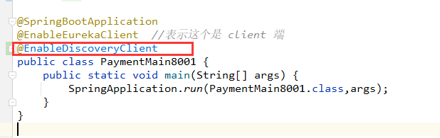
访问 http://localhost:8001/payment/discovery 显示存在两个微服务
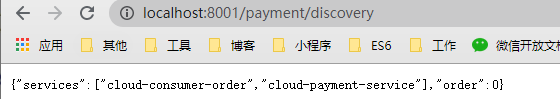
Log 日志打印
1 2 3 2020 -12 -09 11 :12 :27.022 INFO 16200 --- [nio-8001 -exec-1 ] c.w.s.controller.PaymentController : CLOUD-PAYMENT-SERVICE 192.168 .58 .1 8002 http:2020 -12 -09 11 :12 :27.022 INFO 16200 --- [nio-8001 -exec-1 ] c.w.s.controller.PaymentController : CLOUD-PAYMENT-SERVICE 192.168 .58 .1 8001 http:
七、Eureka 的自我保护 1、概述 保护模式主要用于一组客户端和Eureka Server之间存在网络分区场景下的保护。一旦进入保护模式，Eureka Server将会尝试保护其服务注册表中的信息，不再删除服务注册表中的数据，也就是不会注销任何微服务。
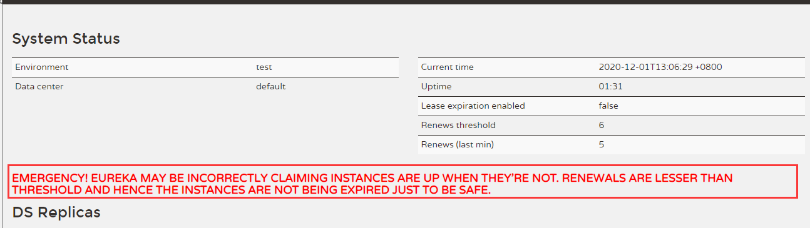
一句话:某时刻某一个微服务不可用了，Eureka不会立刻清理，依旧会对该微服务的信息进行保存
2、怎么禁止自我保护 cloud_eureka_server_7001
1 2 3 4 5 6 7 8 9 10 11 12 13 14 15 16 eureka: instance: hostname: eureka7001.com client: register-with-eureka: false fetch-registry: false service-url: defaultZone: http://www.eureka7002.com:7002/eureka/ server: enable-self-preservation: false eviction-interval-timer-in-ms: 2000
关闭之后 显示
cloud-provider-payment8001
1 2 3 4 5 6 7 8 9 10 11 12 13 14 15 16 eureka: client: register-with-eureka: true fetchRegistry: true service-url: defaultZone: http://www.eureka7001.com:7001/eureka,http://www.eureka7002.com:7002/eureka instance: instance-id: payment8001 prefer-ip-address: true lease-renewal-interval-in-seconds: 1 lease-expiration-duration-in-seconds: 2
此时启动 cloud_eureka_server_7001 和 cloud-provider-payment8001.此时如果直接关闭了cloud-provider-payment8001,那么erueka会直接删除其注册信息
Zookeeper zookeeper是一个分布式协调工具，可以实现注册中心功能
1、创建 cloud-provider-payment8004 模块 2、引入POM 1 2 3 4 5 <dependency > <groupId > org.springframework.cloud</groupId > <artifactId > spring-cloud-starter-zookeeper-discovery</artifactId > </dependency >
3、修改配置文件 1 2 3 4 5 6 7 8 9 10 11 12 server: port: 8004 spring: application: name: cloud-provider-payment cloud: zookeeper: connect-string: 192.168 .0 .200 :2181
4、主启动类 1 2 3 4 5 6 7 8 @SpringBootApplication @EnableDiscoveryClient public class PaymentMain8004 { public static void main (String[] args) { SpringApplication.run(PaymentMain8004.class,args); } }
5、启动 zkServer.cmd,启动 zkCli 中 查看 1 2 3 4 5 6 WatchedEvent state:SyncConnected type :None path:null [zk : localhost :2181 (CONNECTED ) 0 ] ls / [dubbo , services , zookeeper ] [zk : localhost :2181 (CONNECTED ) 1 ] ls /services [cloud -provider -payment ] [zk : localhost :2181 (CONNECTED ) 2 ]
本地访问
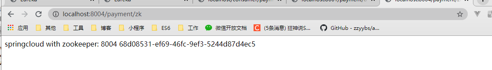
可以详细查看注册信息
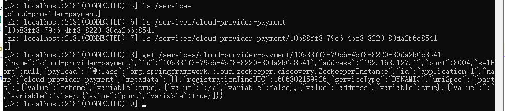
临时节点(zookeeper 是临时的(一点时间 消失后，会把节点删除))
6、创建 订单模块 cloud-consumerzk-order80 1、引入 pom 1 2 3 4 5 <dependency > <groupId > org.springframework.cloud</groupId > <artifactId > spring-cloud-starter-zookeeper-discovery</artifactId > </dependency >
2、配置文件 1 2 3 4 5 6 7 8 9 10 server: port: 80 spring: application: name: cloud-consumer-order cloud: zookeeper: connect-string: 192.168 .0 .200 :2181
3、主启动类 1 2 3 4 5 6 7 @SpringBootApplication @EnableDiscoveryClient public class OrderZKMain80 { public static void main(String [] args) { SpringApplication.run(OrderZKMain80.class ,args); } }
4、业务类 1 2 3 4 5 6 7 8 9 10 11 12 13 14 15 16 17 @RestController @Slf4j public class OrderZKController { public static final String INVOKE_URL = "http://cloud-provider-payment" ; @Resource private RestTemplate restTemplate; @GetMapping(value = "/consumer/payment/zk") public String paymentInfo () { String result = restTemplate.getForObject(INVOKE_URL+"/payment/zk" ,String.class); return result; } }
5、配置 bean 1 2 3 4 5 6 7 8 9 10 11 12 13 14 15 16 17 package com.wj.springcloud.config;import org.springframework.cloud.client.loadbalancer.LoadBalanced;import org.springframework.context.annotation.Bean;import org.springframework.context.annotation.Configuration;import org.springframework.web.client.RestTemplate;@Configuration public class ApplicationContextConfig { @Bean @LoadBalanced public RestTemplate getRestTemplate () { return new RestTemplate (); } }
6、启动 注册到 zk 中
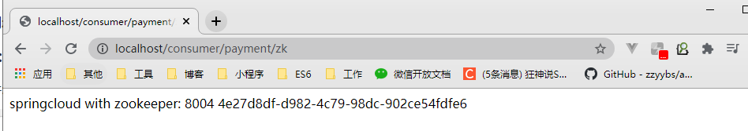
7、集群版zk注册 只需要修改配置文件:
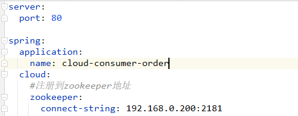
这个connect-string指定多个zk地址即可
connect-string: 1.2.3.4,2.3.4.5
Consul 一、简介 Consul是一套开源的分布式服务发现和配置管理系统，由HashiCorp 公司用Go语言开发。
提供了微服务系统中的服务治理、配置中心、控制总线等功能。这些功能中的每一个都可以根据需要单独使用，也可以一起使用以构建全方位的服务网格，总之Consul提供了一种完整的服务网格解决方案。
它具有很多优点。包括:基于raft协议，比较简洁;支持健康检查,同时支持HTTP和DNS协议支持跨数据中心的WAN集群提供图形界面跨平台，支持Linux、 Mac、Windows
服务发现：提供HTTP和DNS两种发现方式。
健康监测：支持多种方式，HTTP、TCP、Docker、Shell脚本定制化
KV 存储：Key、Value的存储方式
多数据中心：Consul支持多数据中心
可视化 web 界面
二、安装并运行 consul 下载
查看版本号：
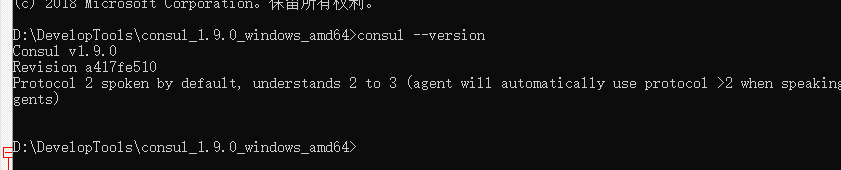
运行
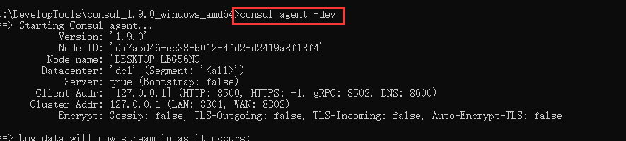
本地访问 ：http://localhost:8500/ui/dc1/services
三、服务提供者 1、创建 cloud-providerconsul-payment8006 模块提供服务 2、pom 依赖 1 2 3 4 5 <dependency > <groupId > org.springframework.cloud</groupId > <artifactId > spring-cloud-starter-consul-discovery</artifactId > </dependency >
3、配置文件 1 2 3 4 5 6 7 8 9 10 11 12 13 14 15 server: port: 8006 spring: application: name: consul-provider-payment cloud: consul: host: localhost port: 8500 discovery: service-name: ${spring.application.name}
4、启动类 1 2 3 4 5 6 7 8 9 10 11 12 13 14 package com.wj.springcloud;import org.springframework.boot.SpringApplication;import org.springframework.boot.autoconfigure.SpringBootApplication;import org.springframework.cloud.client.discovery.EnableDiscoveryClient;@SpringBootApplication @EnableDiscoveryClient public class PaymentMain8006 { public static void main (String[] args) { SpringApplication.run(PaymentMain8006.class, args); } }
5、controller 1 2 3 4 5 6 7 8 9 10 11 12 13 14 15 16 17 18 19 20 package com.wj.springcloud.controller;import lombok.extern.slf4j.Slf4j;import org.springframework.beans.factory.annotation.Value;import org.springframework.web.bind.annotation.RequestMapping;import org.springframework.web.bind.annotation.RestController;import java.util.UUID;@RestController @Slf4j public class PaymentController { @Value("${server.port}") private String serverPort; @RequestMapping(value = "/payment/consul") public String paymentConsul () { return "springcloud with consul: " + serverPort + "\t " + UUID.randomUUID().toString(); } }
6、启动微服务
完成注册之后
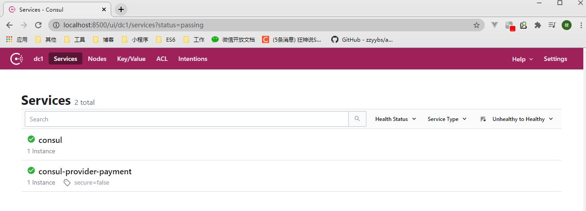
四、服务消费者 1、创建 cloud-consumerconsul-order80 模块 2、pom 1 2 3 4 5 <dependency > <groupId > org.springframework.cloud</groupId > <artifactId > spring-cloud-starter-consul-discovery</artifactId > </dependency >
3、配置文件 1 2 3 4 5 6 7 8 9 10 11 12 13 14 15 server: port: 80 spring: application: name: cloud-consumer-order cloud: consul: host: localhost port: 8500 discovery: service-name: ${spring.application.name}
4、主启动类 1 2 3 4 5 6 7 8 9 10 11 12 13 package com.wj.springcloud;import org.springframework.boot.SpringApplication;import org.springframework.boot.autoconfigure.SpringBootApplication;import org.springframework.cloud.client.discovery.EnableDiscoveryClient;@SpringBootApplication @EnableDiscoveryClient public class OrderConsulMain80 { public static void main (String[] args) { SpringApplication.run(OrderConsulMain80.class, args); } }
5、controller 1 2 3 4 5 6 7 8 9 10 11 12 13 14 15 16 17 18 19 20 21 22 23 24 package com.wj.springcloud.controller;import lombok.extern.slf4j.Slf4j;import org.springframework.web.bind.annotation.GetMapping;import org.springframework.web.bind.annotation.RestController;import org.springframework.web.client.RestTemplate;import javax.annotation.Resource;@RestController @Slf4j public class OrderConsulController { public static final String INVOKE_URL = "http://consul-provider-payment" ; @Resource private RestTemplate restTemplate; @GetMapping(value = "/consumer/payment/consul") public String paymentInfo () { String result = restTemplate.getForObject(INVOKE_URL + "/payment/consul" , String.class); return result; } }
6、配置 bean 1 2 3 4 5 6 7 8 9 10 11 12 13 14 15 package com.wj.springcloud.config;import org.springframework.cloud.client.loadbalancer.LoadBalanced;import org.springframework.context.annotation.Bean;import org.springframework.context.annotation.Configuration;import org.springframework.web.client.RestTemplate;@Configuration public class ApplicationContextConfig { @Bean @LoadBalanced public RestTemplate getRestTemplate () { return new RestTemplate (); } }
7、启动测试
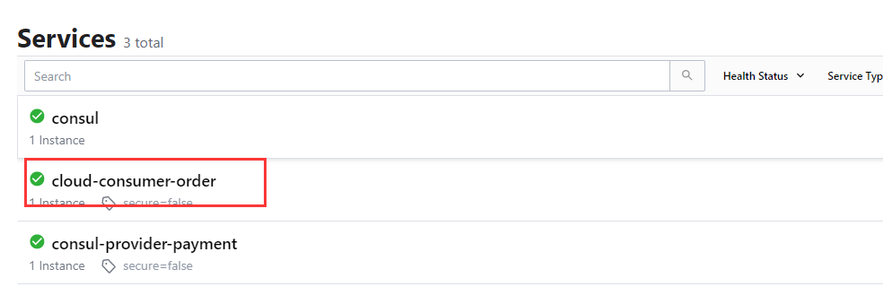
测试 访问：http://localhost/consumer/payment/consul
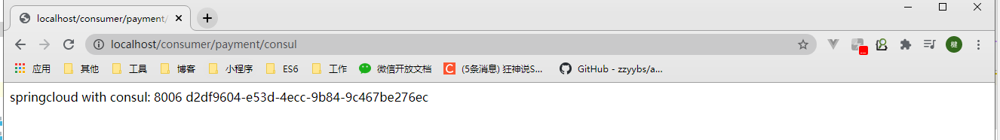
三个注册中心的异同点
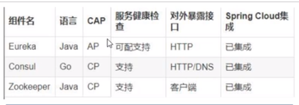
高可用
数据一致性
最多只能同时较好的满足两个。一个分布式系统不可能同时很好的满足一致性，可用性和分区容错性这三个需求，因此，根据CAP原理将NoSQL数据库分成了满足CA原则、满足CР原则和满足AP原则三大类:
CA-单点集群，满足一致性，可用性的系统，通常在可扩展性上不太强大。
CP-满足一致性，分区容忍必的系统，通常性能不是特别高。
AP-满足可用性，分区容忍性的系统，通常可能对一致性要求低一些。
CAP理论的一个例子。开学了，你和同桌互对寒假作业答案，对到一半同桌去了厕所，恰好老师进来要收作业，你决定：AP【交就交吧，有错也无所谓了，交作业要紧】；CP【等同桌回来，把答案对完再交，满分要紧】
服务调用 Ribbon （进入了维护模式）
一、概述 Spring Cloud Ribbon是基于Netflix Ribbon实现的一套`客户端 负载均衡的工具。
简单的说，Ribbon 是 Netflix 发布的开源项目，主要功能是提供客户端的软件负载均衡算法和服务调用。Ribbon客户端组件提供一系列完善的配置项如连接超时，重试等。简单的说，就是在配置文件中列出 Load Balancer (简称LB)后面所有的机器，Ribbon 会自动的帮助你基于某种规则(如简单轮询，随机连接等）去连接这些机器。我们很容易使用Ribbon实现自定义的负载均衡算法。
Ribbon本地负载均衡客户端VS Nginx服务端负载均衡区别
Ribbon（进程内）本地负载均衡，在调用微服务接口时候，会在注册中心上获取注册信息服务列表之后缓存到JVM本地，从而在本地实现 RPC 远程服务调用技术。
Ribbon在工作时分成两步
第二步再根据用户指定的策略，在从server取到的服务注册列表中选择一个地址。其中Ribbon提供了多种策略:比如轮询、随机和根据响应时间加权。
一句话：Ribbon 就是 负载均衡+restTemplate.
二、负载均衡 1、默认我们使用eureka的新版本时,它默认集成了ribbon 1 2 3 4 5 <dependency > <groupId > org.springframework.cloud</groupId > <artifactId > spring-cloud-starter-netflix-eureka-client</artifactId > </dependency >
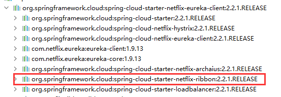
2、RestTemplate类:
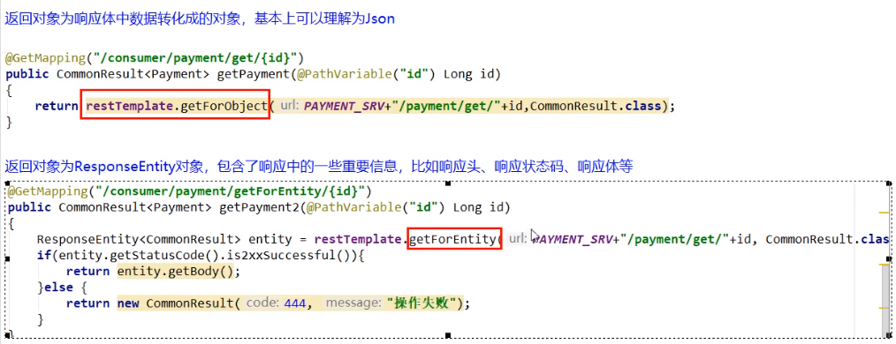
RestTemplate的:
xxxForObject()方法,返回的是响应体中的数据
xxxForEntity()方法.返回的是entity对象,这个对象不仅仅包含响应体数据,还包含响应体信息(状态码等)
三、Ribbon常用负载均衡算法:
IRule接口,Riboon使用该接口,根据特定算法从所有服务中,选择一个服务,
Rule接口有7个实现类,每个实现类代表一个负载均衡算法
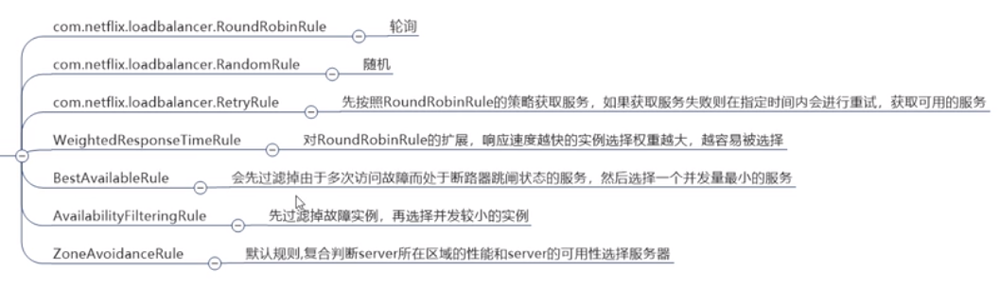
四、使用 Ribbon 这个自定义配置类不能放在@ComponentScan所扫描的当前包下以及子包下,
1、修改 cloud-consumer-order80 2、额外创建一个 规则包
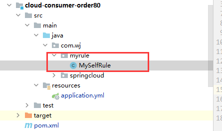
3、创建配置类，指定负载均衡算法 1 2 3 4 5 6 7 8 9 10 11 12 13 14 15 16 package com.wj.myrule;import com.netflix.loadbalancer.IRule;import com.netflix.loadbalancer.RandomRule;import org.springframework.context.annotation.Bean;import org.springframework.context.annotation.Configuration;@Configuration public class MySelfRule { @Bean public IRule myRule () { return new RandomRule (); } }
4、在主启动类上加一个注解 1 2 3 4 5 6 7 8 @SpringBootApplication @EnableEurekaClient @RibbonClient(name = "CLOUD-PAYMENT-SERVICE",configuration = MySelfRule.class) public class OrderMain80 { public static void main (String[] args) { SpringApplication.run(OrderMain80.class,args); } }
表示,访问CLOUD_PAYMENT_SERVICE的服务时,使用我们自定义的负载均衡算法
5、自定义负载均衡算法 1、ribbon的轮询算法原理 负载均衡算法: rest接口第几次请求数%服务器集群总数量=实际调用服务器位置下标，每次服务重启动后rest接口计数从1开始.
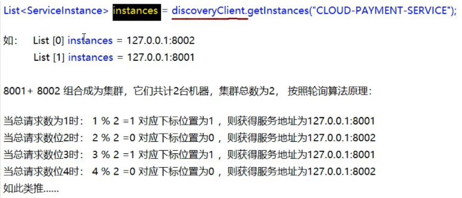
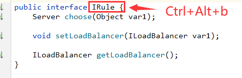
查看源码
2、自定义负载均衡算法 1、给pay模块(cloud-provider-payment8001，cloud-provider-payment8002),的controller方法添加一个方法,返回当前节点端口
1 2 3 4 5 6 7 8 9 10 11 12 13 14 15 16 17 18 19 20 21 22 23 24 25 26 package com.wj.springcloud.controller;import com.wj.springcloud.entities.CommonResult;import com.wj.springcloud.entities.Payment;import com.wj.springcloud.service.PaymentService;import lombok.extern.slf4j.Slf4j;import org.springframework.beans.factory.annotation.Value;import org.springframework.cloud.client.ServiceInstance;import org.springframework.cloud.client.discovery.DiscoveryClient;import org.springframework.web.bind.annotation.*;import javax.annotation.Resource;import java.util.List;import java.util.concurrent.TimeUnit;@RestController @Slf4j public class PaymentController { @Value("${server.port}") private String serverPort; @GetMapping(value = "/payment/lb") public String getPaymentLB () { return serverPort; } }
2、修改cloud-consumer-order80 模块
去掉@LoadBalanced
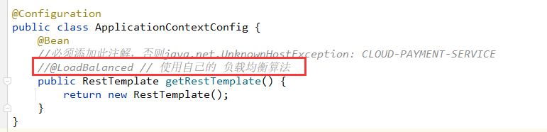
3、自定义接口
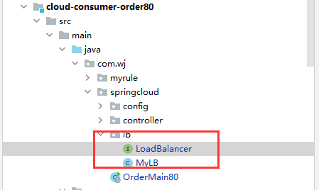
1 2 3 4 5 6 7 8 9 10 11 package com.wj.springcloud.lb;import org.springframework.cloud.client.ServiceInstance;import java.util.List;public interface LoadBalancer { ServiceInstance instances (List<ServiceInstance> serviceInstances) ; }
1 2 3 4 5 6 7 8 9 10 11 12 13 14 15 16 17 18 19 20 21 22 23 24 25 26 27 28 29 30 31 32 33 34 35 36 37 38 package com.wj.springcloud.lb;import org.springframework.cloud.client.ServiceInstance;import org.springframework.stereotype.Component;import java.util.List;import java.util.concurrent.atomic.AtomicInteger;@Component public class MyLB implements LoadBalancer { private AtomicInteger atomicInteger = new AtomicInteger (0 ); public final int getAndIncrement () { int current; int next; do { current = this .atomicInteger.get(); next = current >= 2147483647 ? 0 : current + 1 ; }while (!this .atomicInteger.compareAndSet(current,next)); System.out.println("*****第几次访问，次数next: " +next); return next; } @Override public ServiceInstance instances (List<ServiceInstance> serviceInstances) { int index = getAndIncrement() % serviceInstances.size(); return serviceInstances.get(index); } }
4、修改controller
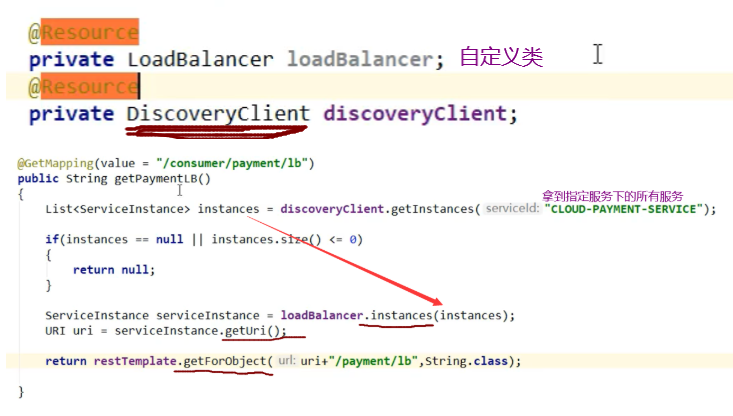
5、测试 ：http://localhost/consumer/payment/lb，实现了该接口的 轮询
Feign 不在更新，直接过渡到 OpenFeign
OpenFeign Feign是一个声明式的Web服务客户端，让编写Web服务客户端变得非常容易，只需创建一个接口并在接口上添加注解即可
一、Feign能干什么 Feign旨在使编写Java Http客户端变得更容易。
前面在使用Ribbon+RestTemplate时，利用RestTemplate对http请求的封装处理，形成了一套模版化的调用方法。但是在实际开发中，由于对服务依赖的调用可能不止一处，往往一个接口会被多处调用，所以通常都会针对每个微服务自行封装一些客户端类来包装这些依赖服务的调用。所以，Feign在此基础上做了进一步封装，由他来帮助我们定义和实现依赖服务接口的定义。在Feign的实现下，我们只需创建一个接口并使用注解的方式来配置它(以前是Dao接口上面标注Mapper注解,现在是一个微服务接口上面标注一个Feign注解即可)，即可完成对服务提供方的接口绑定，简化了使用Spring cloud Ribbon时，自动封装服务调用客户端的开发量。
二、Feign集成了Ribbon 利用Ribbon维护了Payment的服务列表信息，并且通过轮询实现了客户端的负载均衡。而与Ribbon不同的是，通过feign只需要定义服务绑定接口且以声明式的方法，优雅而简单的实现了服务调用
三、使用 Open feign 1、新建 cloud-consumer-feign-order80 模块 2、pom 文件 1 2 3 4 5 <dependency > <groupId > org.springframework.cloud</groupId > <artifactId > spring-cloud-starter-openfeign</artifactId > </dependency >
3、配置文件 1 2 3 4 5 6 7 8 9 server: port: 80 eureka: client: register-with-eureka: false service-url: defaultZone: http://www.eureka7001.com:7001/eureka/,http://www.eureka7002.com:7002/eureka/
4、主启动类 1 2 3 4 5 6 7 8 9 10 11 12 13 14 15 package com.wj.springcloud;import org.springframework.boot.SpringApplication;import org.springframework.boot.autoconfigure.SpringBootApplication;import org.springframework.cloud.openfeign.EnableFeignClients;@SpringBootApplication @EnableFeignClients public class OrderFeignMain80 { public static void main (String[] args) { SpringApplication.run(OrderFeignMain80.class, args); } }
5、fegin需要调用的其他的服务的接口 1 2 3 4 5 6 7 8 9 10 11 12 13 14 15 16 17 18 package com.wj.springcloud.service; import com.wj.springcloud.entities.CommonResult; import com.wj.springcloud.entities.Payment; import org.springframework.cloud.openfeign.FeignClient; import org.springframework.stereotype.Component; import org.springframework.web.bind.annotation.GetMapping; import org.springframework.web.bind.annotation.PathVariable; @Component @FeignClient(value = "CLOUD-PAYMENT-SERVICE" ) // 指定这个接口对应要调用的微服务的服务名称 public interface PaymentFeignService{ @GetMapping(value = "/payment/get/{id}" ) public CommonResult<Payment> getPaymentById(@PathVariable("id") Long id); @GetMapping(value = "/payment/feign/timeout" ) public String paymentFeignTimeout(); }
6、controller 1 2 3 4 5 6 7 8 9 10 11 12 13 14 15 16 17 18 19 20 21 22 23 24 25 26 27 28 29 package com.wj.springcloud.controller;import com.wj.springcloud.service.PaymentFeignService;import com.wj.springcloud.entities.CommonResult;import com.wj.springcloud.entities.Payment;import lombok.extern.slf4j.Slf4j;import org.springframework.web.bind.annotation.GetMapping;import org.springframework.web.bind.annotation.PathVariable;import org.springframework.web.bind.annotation.RestController;import javax.annotation.Resource;@RestController @Slf4j public class OrderFeignController { @Resource private PaymentFeignService paymentFeignService; @GetMapping(value = "/consumer/payment/get/{id}") public CommonResult<Payment> getPaymentById (@PathVariable("id") Long id) { return paymentFeignService.getPaymentById(id); } @GetMapping(value = "/consumer/payment/feign/timeout") public String paymentFeignTimeout () { return paymentFeignService.paymentFeignTimeout(); } }
7、启动测试
启动两个erueka(7001,7002)
启动两个pay(8001,8002)
启动当前的order模块
测试地址：http://localhost/consumer/payment/get/32
Feign默认使用ribbon实现负载均衡
四、OpenFeign超时机制: OpenFeign默认等待时间是1秒,超过1秒,直接报错
1、设置超时时间,修改配置文件 因为OpenFeign的底层是ribbon进行负载均衡,所以它的超时时间是由ribbon控制
1 2 3 4 5 6 7 8 9 10 11 12 13 14 15 16 server: port: 80 eureka: client: register-with-eureka: false service-url: defaultZone: http://www.eureka7001.com:7001/eureka/,http://www.eureka7002.com:7002/eureka/ ribbon: ReadTimeout: 5000 ConnectTimeout: 5000
2、OpenFeign日志 Feign提供了日志打印功能，我们可以通过配置来调整日志级别，从而了解Feign中 Http请求的细节。说白了就是对Feign接口的调用情况进行监控和输出
OpenFeign的日志级别有:
NONE:默认的，不显示任何日志;
BASIC:仅记录请求方法、URL、响应状态码及执行时间;
HEADERS:除了BASIC中定义的信息之外，还有请求和响应的头信息;
FULL:除了HEADERS中定义的信息之外，还有请求和响应的正文及元数据。
1、使用OpenFeign的日志:
实现在配置类中添加OpenFeign的日志类
1 2 3 4 5 6 7 8 9 10 11 12 13 package com.wj.springcloud.config;import feign.Logger;import org.springframework.context.annotation.Bean;import org.springframework.context.annotation.Configuration;@Configuration public class FeignConfig { @Bean Logger.Level feignLoggerLevel () { return Logger.Level.FULL; } }
2、为指定类设置日志级别:
1 2 3 4 5 6 7 8 9 10 11 12 13 14 15 16 17 18 19 20 server: port: 80 eureka: client: register-with-eureka: false service-url: defaultZone: http://www.eureka7001.com:7001/eureka/,http://www.eureka7002.com:7002/eureka/ ribbon: ReadTimeout: 5000 ConnectTimeout: 5000 logging: level: com.wj.springcloud.service.PaymentFeignService: debug
3、启动服务测试
服务降级 Hystrix 停止更新！！！
一、服务雪崩 多个微服务之间调用的时候，假设微服务A调用微服务B和微服务C，微服务B和微服务C又调用其它的微服务，这就是所谓的“扇出”。如果扇出的链路上某个微服务的调用响应时间过长或者不可用，对微服务A的调用就会占用越来越多的系统资源，进而引起系统崩溃，所谓的“雪崩效应”.
对于高流量的应用来说，单一的后端依赖可能会导致所有服务器上的所有资源都在几秒钟内饱和。比失败更糟糕的是，这些应用程序还可能导致服务之间的延迟增加，备份队列，线程和其他系统资源紧张，导致整个系统发生更多的级联故障。这些都表示需要对故障和延迟进行隔离和管理，以便单个依赖关系的失败，不能取消整个应用程序或系统。
所以，通常当你发现一个模块下的某个实例失败后，这时候这个模块依然还会接收流量，然后这个有问题的模块还调用了其他的模块，这样就会发生级联故障，或者叫雪崩。
Hystrix是一个用于处理分布式系统的延迟和容错的开源库，在分布式系统里，许多依赖不可避免的会调用失败，比如超时、异常等，Hystrix能够保证在一个依赖出问题的情况下，不会导致整体服务失败，避免级联故障，以提高分布式系统的弹性。
“断路器”本身是一种开关装置，当某个服务单元发生故障之后，通过断路器的故障监控（类似熔断保险丝)，向调用方返回一个符合预期的、可处理的备选响应（FallBack)，而不是长时间的等待或者抛出调用方无法处理的异常，这样就保证了服务调用方的线程不会被长时间、不必要地占用，从而避免了故障在分布式系统中的蔓延，乃至雪崩。
二、Hystrix中的重要概念 1,服务降级 比如当某个服务繁忙,不能让客户端的请求一直等待,应该立刻返回给客户端一个备选方案
运行异常
超时
服务熔断发生服务降级
线程池/信号量打满 也会发生服务降级
2,服务熔断 类比保险丝达到最大服务访问后，直接拒绝访问，拉闸限电，然后调用服务降级的方法并返回友好提示
就是保险丝：服务的降级->进而熔断->恢复调用链路
3,服务限流 秒杀高并发等操作，严禁一窝蜂的过来拥挤，大家排队，一秒钟N个，有序进行
三、服务降级 1、创建带降级机制的服务端模块 1、名字 cloud-provider-hystrix-payment8001
2、pom 文件 1 2 3 4 5 <dependency > <groupId > org.springframework.cloud</groupId > <artifactId > spring-cloud-starter-netflix-hystrix</artifactId > </dependency >
3、配置文件 1 2 3 4 5 6 7 8 9 10 11 12 13 server: port: 8001 spring: application: name: cloud-provider-hystrix-payment eureka: client: register-with-eureka: true fetch-registry: true service-url: defaultZone: http://eureka7001.com:7001/eureka
4、主启动类 1 2 3 4 5 6 7 8 9 10 11 12 13 14 15 16 17 18 package com.wj.springcloud;import com.netflix.hystrix.contrib.metrics.eventstream.HystrixMetricsStreamServlet;import org.springframework.boot.SpringApplication;import org.springframework.boot.autoconfigure.SpringBootApplication;import org.springframework.boot.web.servlet.ServletRegistrationBean;import org.springframework.cloud.client.circuitbreaker.EnableCircuitBreaker;import org.springframework.cloud.netflix.eureka.EnableEurekaClient;import org.springframework.context.annotation.Bean;@SpringBootApplication @EnableEurekaClient public class PaymentHystrixMain8001 { public static void main (String[] args) { SpringApplication.run(PaymentHystrixMain8001.class, args); } }
5、service 1 2 3 4 5 6 7 8 9 10 11 12 13 14 15 16 17 18 19 20 21 22 23 24 25 26 27 28 29 30 package com.wj.springcloud.service;import cn.hutool.core.util.IdUtil;import com.netflix.hystrix.contrib.javanica.annotation.HystrixCommand;import com.netflix.hystrix.contrib.javanica.annotation.HystrixProperty;import org.springframework.stereotype.Service;import org.springframework.web.bind.annotation.PathVariable;import java.util.concurrent.TimeUnit;@Service public class PaymentService { public String paymentInfo_OK (Integer id) { return "线程池: " + Thread.currentThread().getName() + " paymentInfo_OK,id: " + id + "\t" + "O(∩_∩)O哈哈~" ; } public String paymentInfo_TimeOut (Integer id) { int timeout = 5 ; try { TimeUnit.SECONDS.sleep(timeout); } catch (InterruptedException e) { e.printStackTrace(); } return "线程池: " + Thread.currentThread().getName() + " id: " + id + "\t" + "O(∩_∩)O哈哈~" + " 耗时(秒): " + timeout + " 秒" ; } }
6、controller 1 2 3 4 5 6 7 8 9 10 11 12 13 14 15 16 17 18 19 20 21 22 23 24 25 26 27 28 29 30 31 32 33 34 35 package com.wj.springcloud.controller;import com.wj.springcloud.service.PaymentService;import lombok.extern.slf4j.Slf4j;import org.springframework.beans.factory.annotation.Value;import org.springframework.web.bind.annotation.GetMapping;import org.springframework.web.bind.annotation.PathVariable;import org.springframework.web.bind.annotation.RestController;import javax.annotation.Resource;@RestController @Slf4j public class PaymentController { @Resource private PaymentService paymentService; @Value("${server.port}") private String serverPort; @GetMapping("/payment/hystrix/ok/{id}") public String paymentInfo_OK (@PathVariable("id") Integer id) { String result = paymentService.paymentInfo_OK(id); log.info("*****result: " + result); return result; } @GetMapping("/payment/hystrix/timeout/{id}") public String paymentInfo_TimeOut (@PathVariable("id") Integer id) { String result = paymentService.paymentInfo_TimeOut(id); log.info("*****result: " + result); return result; } }
7、先测试 http://localhost:8001/payment/hystrix/ok/32
http://localhost:8001/payment/hystrix/timeout/32
正常访问都是 可以的
此时使用压测工具,并发20000个请求,请求http://localhost:8001/payment/hystrix/timeout/32
8、先不加入hystrix 2、创建带降级的客户端模块 1、名字 cloud-consumer-feign-hystrix-order80
2、pom 1 2 3 4 5 6 7 8 9 10 <dependency > <groupId > org.springframework.cloud</groupId > <artifactId > spring-cloud-starter-openfeign</artifactId > </dependency > <dependency > <groupId > org.springframework.cloud</groupId > <artifactId > spring-cloud-starter-netflix-hystrix</artifactId > </dependency >
3、配置文件 1 2 3 4 5 6 7 8 server: port: 80 eureka: client: register-with-eureka: false service-url: defaultZone: http://www.eureka7001.com:7001/eureka
4、主启动类 1 2 3 4 5 6 7 8 9 10 11 12 13 14 15 package com.wj.springcloud;import org.springframework.boot.SpringApplication;import org.springframework.boot.autoconfigure.SpringBootApplication;import org.springframework.cloud.netflix.hystrix.EnableHystrix;import org.springframework.cloud.openfeign.EnableFeignClients;@SpringBootApplication @EnableFeignClients public class OrderHystrixMain80 { public static void main (String[] args) { SpringApplication.run(OrderHystrixMain80.class,args); } }
5、远程调用 接口 1 2 3 4 5 6 7 8 9 10 11 12 13 14 15 16 17 package com.wj.springcloud.service;import org.springframework.cloud.openfeign.FeignClient;import org.springframework.stereotype.Component;import org.springframework.web.bind.annotation.GetMapping;import org.springframework.web.bind.annotation.PathVariable;@Component @FeignClient(value = "CLOUD-PROVIDER-HYSTRIX-PAYMENT") public interface PaymentHystrixService { @GetMapping("/payment/hystrix/ok/{id}") public String paymentInfo_OK (@PathVariable("id") Integer id) ; @GetMapping("/payment/hystrix/timeout/{id}") public String paymentInfo_TimeOut (@PathVariable("id") Integer id) ; }
6、controller 1 2 3 4 5 6 7 8 9 10 11 12 13 14 15 16 17 18 19 20 21 22 23 24 25 26 27 28 29 30 31 32 package com.wj.springcloud.controller;import com.netflix.hystrix.contrib.javanica.annotation.DefaultProperties;import com.netflix.hystrix.contrib.javanica.annotation.HystrixCommand;import com.netflix.hystrix.contrib.javanica.annotation.HystrixProperty;import com.wj.springcloud.service.PaymentHystrixService;import lombok.extern.slf4j.Slf4j;import org.springframework.web.bind.annotation.GetMapping;import org.springframework.web.bind.annotation.PathVariable;import org.springframework.web.bind.annotation.RestController;import javax.annotation.Resource;@RestController @Slf4j public class OrderHystirxController { @Resource private PaymentHystrixService paymentHystrixService; @GetMapping("/consumer/payment/hystrix/ok/{id}") public String paymentInfo_OK (@PathVariable("id") Integer id) { String result = paymentHystrixService.paymentInfo_OK(id); return result; } @GetMapping("/consumer/payment/hystrix/timeout/{id}") public String paymentInfo_TimeOut (@PathVariable("id") Integer id) { String result = paymentHystrixService.paymentInfo_TimeOut(id); return result; } }
7、启动测试 http://localhost/consumer/payment/hystrix/ok/32
http://localhost/consumer/payment/hystrix/timeout/32
再次压测2万并发,发现order访问也变慢了
3、解决办法
4、配置服务端降级 超时异常 1、修改cloud-provider-hystrix-payment8001
为service指定的方法(paymentInfo_TimeOut)添加 @HystrixCommand 注解
1 2 3 4 5 6 7 8 9 10 11 12 13 14 15 16 17 18 19 @HystrixCommand(fallbackMethod = "paymentInfo_TimeOutHandler", commandProperties = { // 这个线程的超时时间是3秒 @HystrixProperty(name = "execution.isolation.thread.timeoutInMilliseconds", value = "3000") }) public String paymentInfo_TimeOut (Integer id) { int timeout = 3 ; try { TimeUnit.SECONDS.sleep(timeout); } catch (InterruptedException e) { e.printStackTrace(); } return "线程池: " + Thread.currentThread().getName() + " id: " + id + "\t" + "O(∩_∩)O哈哈~" + " 耗时(秒): " + timeout + " 秒" ; } public String paymentInfo_TimeOutHandler (Integer id) { return "线程池: " + Thread.currentThread().getName() + " 8001系统繁忙或者运行报错，请稍后再试,id: " + id + "\t" + "o(╥﹏╥)o" ; }
2、主启动类上,添加激活hystrix的注解
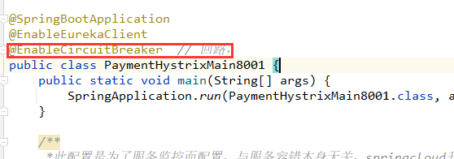
3、测试发现
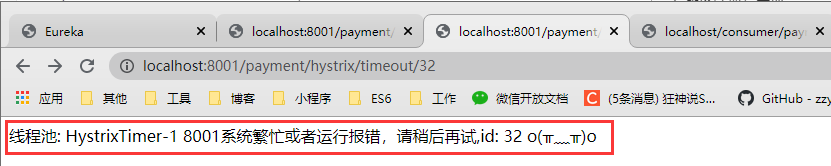
打出了 哭的笑脸，服务端已经触发了 服务降级
运行异常 1、修改
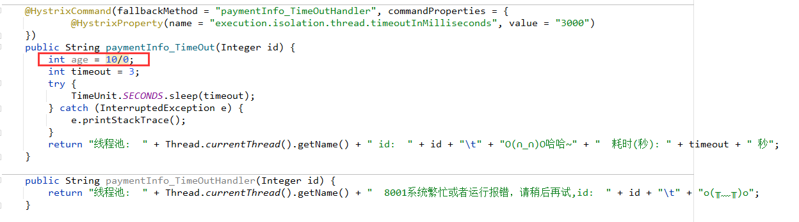
2、测试
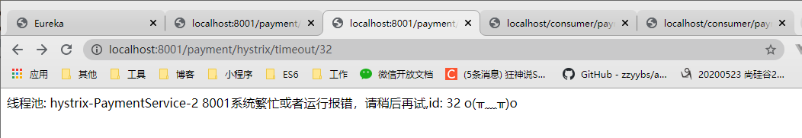
打出了 哭的笑脸，服务端已经触发了 服务降级
5、配置客户端降级 一般服务降级,都是放在客户端(order模块),
1、修改配置文件 1 2 3 4 5 6 7 8 9 10 11 12 13 14 15 16 17 18 19 20 server: port: 80 eureka: client: register-with-eureka: false service-url: defaultZone: http://www.eureka7001.com:7001/eureka ribbon: ReadTimeout: 5000 ConnectTimeout: 5000 feign: hystrix: enabled: true
2、主启动类
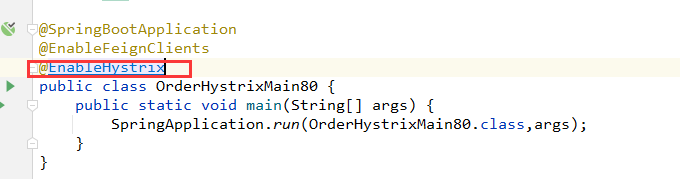
3、修改 controller 1 2 3 4 5 6 7 8 9 10 11 12 13 @GetMapping("/consumer/payment/hystrix/timeout/{id}") @HystrixCommand(fallbackMethod = "paymentTimeOutFallbackMethod",commandProperties = { @HystrixProperty(name="execution.isolation.thread.timeoutInMilliseconds",value="1500") }) public String paymentInfo_TimeOut (@PathVariable("id") Integer id) { String result = paymentHystrixService.paymentInfo_TimeOut(id); return result; } public String paymentTimeOutFallbackMethod (@PathVariable("id") Integer id) { return "我是消费者80,对方支付系统繁忙请10秒钟后再试或者自己运行出错请检查自己,o(╥﹏╥)o" ; }
4、测试
注意:,这里pay模块和order模块都开启了服务降级
但是order这里,设置了1.5秒就降级,所以访问时,一定会降级
6、重构 上面出现的问题:
降级方法与业务方法写在了一块,耦合度高
每个业务方法都写了一个降级方法,重复代码多
1、解决重复代码的问题 配置一个全局的降级方法,所有方法都可以走这个降级方法,至于某些特殊创建,再单独创建方法
1.创建一个全局方法
1 2 3 4 public String payment_Global_FallbackMethod () { return "Global异常处理信息，请稍后再试，/(ㄒoㄒ)/~~" ; }
2.使用注解指定其为全局降级方法(默认降级方法)
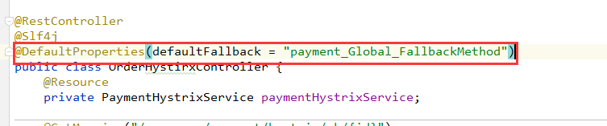
指定这个方法为默认降级方法,当业务类没有指定降级方法就使用这个方法作为降级方法
3.业务方法使用默认降级方法(不指定降级方法，就使用默认的)
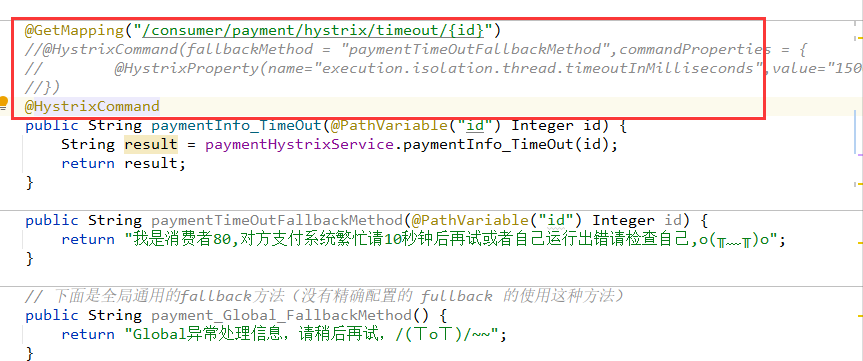
4.测试
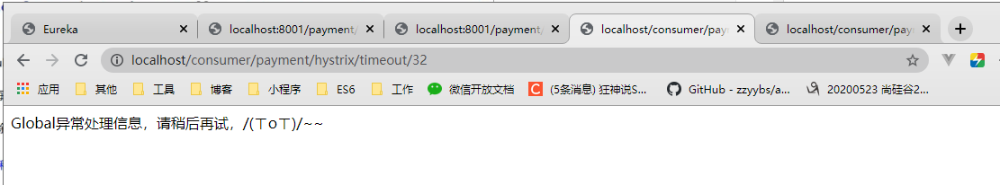
2、解决代码耦合度的问题: 1.Payservice接口是远程调用pay模块的,我们这里创建一个类实现service接口,在实现类中统一处理异常
1 2 3 4 5 6 7 8 9 10 11 12 13 14 15 16 17 package com.wj.springcloud.service;import org.springframework.stereotype.Component;@Component public class PaymentFallbackService implements PaymentHystrixService { @Override public String paymentInfo_OK (Integer id) { return "-----PaymentFallbackService fall back-paymentInfo_OK ,o(╥﹏╥)o" ; } @Override public String paymentInfo_TimeOut (Integer id) { return "-----PaymentFallbackService fall back-paymentInfo_TimeOut ,o(╥﹏╥)o" ; } }
2.让PayService的实现类生效:
1 2 3 4 5 6 7 8 9 10 11 12 13 14 15 16 17 18 19 package com.wj.springcloud.service;import org.springframework.cloud.openfeign.FeignClient;import org.springframework.stereotype.Component;import org.springframework.web.bind.annotation.GetMapping;import org.springframework.web.bind.annotation.PathVariable;@Component @FeignClient(value = "CLOUD-PROVIDER-HYSTRIX-PAYMENT",fallback = PaymentFallbackService.class) public interface PaymentHystrixService { @GetMapping("/payment/hystrix/ok/{id}") public String paymentInfo_OK (@PathVariable("id") Integer id) ; @GetMapping("/payment/hystrix/timeout/{id}") public String paymentInfo_TimeOut (@PathVariable("id") Integer id) ; }
它的运行逻辑是:
当请求过来,首先还是通过Feign远程调用pay模块对应的方法, 但是如果pay模块报错,调用失败,那么就会调用PayMentFalbackService类的,当前同名的方法,作为降级方法
3.启动测试
启动order和pay正常访问–ok
此时将pay服务关闭,order再次访问
虽然该
没有指明服务降级的方法，当服务端关闭后，该方法还是 降级了。
四、服务熔断 类比保险丝达到最大服务访问后，直接拒绝访问,拉闸限电，然后调用服务降级的方法并返回友好提示
断路器:就是保险丝，会断开，也会连上~~
熔断是什么？
熔断机制概述
熔断机制是应对雪崩效应的一种微服务链路保护机制。当扇出链路的某个微服务出错不可用或者响应时间太长时，会进行服务的降级，进而熔断该节点微服务的调用，快速返回错误的响应信息。当检测到该节点微服务调用响应正常后，恢复调用链路。
在Spring Cloud框架里，熔断机制通过Hystrix实现。Hystrix会监控微服务间调用的状况，当失败的调用到一定阈值，缺省是5秒内20次调用失败，就会启动熔断机制。熔断机制的注解是@HystrixCommand。
1、修改cloud-provider-hystrix-payment8001 1、修改Payservice接口,添加服务熔断相关的方法:
1 2 3 4 5 6 7 8 9 10 11 12 13 14 15 16 17 18 @HystrixCommand(fallbackMethod = "paymentCircuitBreaker_fallback", commandProperties = { @HystrixProperty(name = "circuitBreaker.enabled", value = "true"),// 是否开启断路器 @HystrixProperty(name = "circuitBreaker.requestVolumeThreshold", value = "10"),// 请求次数 @HystrixProperty(name = "circuitBreaker.sleepWindowInMilliseconds", value = "100000"), // 时间窗口期 @HystrixProperty(name = "circuitBreaker.errorThresholdPercentage", value = "60"),// 失败率达到多少后跳闸 }) public String paymentCircuitBreaker (@PathVariable("id") Integer id) { if (id < 0 ) { throw new RuntimeException ("******id 不能负数" ); } String serialNumber = IdUtil.simpleUUID(); return Thread.currentThread().getName() + "\t" + "调用成功，流水号: " + serialNumber; } public String paymentCircuitBreaker_fallback (@PathVariable("id") Integer id) { return "id 不能负数，请稍后再试，/(ㄒoㄒ)/~~ id: " + id; }
这里属性整体意思是:
10秒之内(窗口,会移动),如果并发超过10个,或者10个并发中,失败了6个,就开启熔断器
断路器的打开和关闭,是按照一下5步决定的
2、修改 controller，添加方法 1 2 3 4 5 6 7 8 @GetMapping("/payment/circuit/{id}") public String paymentCircuitBreaker (@PathVariable("id") Integer id) { String result = paymentService.paymentCircuitBreaker(id); log.info("****result: " +result); return result; }
3、测试 多次访问,并且错误率超过60%:
此时服务熔断,此时即使访问正确的也会报错:
但是,当过了几秒后,又恢复了
因为在10秒窗口期内,它自己会尝试接收部分请求,发现服务可以正常调用,慢慢的当错误率低于60%,取消熔断
4、总结 熔断类型
熔断打开 -> 请求不再进行调用当前服务，内部设胃时钟一般为MTTR(平均故障处理时间)，当打开时长达到所设时钟则进入半熔断状态
熔断关团 -> 熔断关闭不会对服务进行熔断
熔断半开 -> 部分请求根据规则调用当前服务，如果请求成功且符合规则则认为当前服务恢复正常，关闭熔断
五、服务限流 SpringCloud Alibaba sentinel讲解
六、HystrixDashboard 监控仪表盘 除了隔离依赖服务的调用以外，Hystrixi还提供了准实时的调用监控(Hystrix Dashboard)，Hystrix会持续地记录所有通过Hystrix发起的请求的执行信息，并以统计报表和图形的形式展示给用户，包括每秒执行多少请求多少成功，多少失败等。Netflix通过hystrix-metrics-event-stream项目实现了对以上指标的监控。Spring Cloud也提供了Hystrix Dashboard的整合，对监控内容转化成可视化界面。
1、创建项目 cloud-consumer-hystrix-dashboard9001
2、pom 文件 1 2 3 4 <dependency > <groupId > org.springframework.cloud</groupId > <artifactId > spring-cloud-starter-netflix-hystrix-dashboard</artifactId > </dependency >
3、配置文件 4、主启动类 1 2 3 4 5 6 7 8 9 10 11 12 13 14 package com.wj.springcloud;import org.springframework.boot.SpringApplication;import org.springframework.boot.autoconfigure.SpringBootApplication;import org.springframework.cloud.netflix.hystrix.dashboard.EnableHystrixDashboard;@SpringBootApplication @EnableHystrixDashboard public class HystrixDashboardMain9001 { public static void main (String[] args) { SpringApplication.run(HystrixDashboardMain9001.class, args); } }
5、各个微服务需要 引入 1 2 3 4 <dependency > <groupId > org.springframework.boot</groupId > <artifactId > spring-boot-starter-actuator</artifactId > </dependency >
之前的pom文件中都添加过了,这个是springboot的监控组件
6、访问测试 访问：http://localhost:9001/hystrix
7,注意,此时仅仅是可以访问HystrixDashboard,并不代表已经监控了cloud-provider-hystrix-payment8001 如果要监控,还需要配置:(cloud-provider-hystrix-payment8001为例)
cloud-provider-hystrix-payment8001 主启动类中加入以下代码
1 2 3 4 5 6 7 8 9 10 11 12 13 14 @Bean public ServletRegistrationBean getServlet () { HystrixMetricsStreamServlet streamServlet = new HystrixMetricsStreamServlet (); ServletRegistrationBean registrationBean = new ServletRegistrationBean (streamServlet); registrationBean.setLoadOnStartup(1 ); registrationBean.addUrlMappings("/hystrix.stream" ); registrationBean.setName("HystrixMetricsStreamServlet" ); return registrationBean; }
8、启动测试
服务网关 Zuul 服务网关 停止更新
GeteWay 新一代网关 一、概述简介
Gateway是在Spring生态系统之上构建的API网关服务，基于Spring 5，Spring Boot 2和 Project Reactor等技术。
Gateway旨在提供一种简单而有效的方式来对API进行路由，以及提供一些强大的过滤器功能，例如:熔断、限流、重试等
gateway之所以性能号,因为底层使用WebFlux,而jwebFlux底层使用netty通信(NIO)
二、GateWay的特性 Spring Cloud Gateway具有如下特性:
基于Spring Framework 5, Project Reactor和Spring Boot 2.0进行构建;
动态路由:能够匹配任何请求属性;
可以对路由指定Predicate (断言）和Filter(过滤器);
集成Hystrix的断路器功能;
集成Spring Cloud服务发现功能;
易于编写的 Predicate (断言）和Filter (过滤器);请求限流功能;|
支持路径重写。
三、gateway 的三大核心概念
router 路由路：由是构建网关的基本模块，它由ID，目标URI，一系列的断言和过滤器组成，如果断言为true则匹配该路由，就是根据某些规则,将请求发送到指定服务上
Predicate 断言：参考的是Java8java.util.function.Predicate，开发人员可以匹配HTTP请求中的所有内容(例如请求头或请求参数)，如果请求与断言相匹配则进行路由，犹是判断,如果符合条件就是Xxxx,反之yyyy
Filter 过滤：指的是Spring框架中GatewayFilter的实例，使用过滤器，可以在请求被路由前或者之后对请求进行修改。路由前后,过滤请求
四、GateWay的工作原理
客户端向Spring Cloud Gateway 发出请求。然后在Gateway Handier Mapping 中找到与请求相匹配的路由，将其发送到GatewayWeb Handler.
Handler再通过指定的过滤器链来将请求发送到我们实际的服务执行业务逻辑，然后返回.
Filter在“pre”类型的过滤器可以做参数校验、权限校验、流量监控、日志输出、协议转换等，
五、使用 GateWay 创建项目 cloud-gateway-gateway9527
1、pom 1 2 3 4 5 <dependency > <groupId > org.springframework.cloud</groupId > <artifactId > spring-cloud-starter-gateway</artifactId > </dependency >
2、配置文件 1 2 3 4 5 6 7 8 9 10 11 12 13 14 15 16 17 18 19 20 21 22 23 24 25 26 27 28 29 server: port: 9527 spring: application: name: cloud-gateway cloud: gateway: routes: - id: payment_routh uri: http://localhost:8001 predicates: - Path=/payment/get/** - id: payment_routh2 uri: http://localhost:8001 predicates: - Path=/payment/lb/** eureka: instance: hostname: cloud-gateway-service client: service-url: register-with-eureka: true fetch-registry: true defaultZone: http://www.eureka7001.com:7001/eureka,http://www.eureka7002.com:7002/eureka
3、主启动类 1 2 3 4 5 6 7 8 9 10 11 12 13 package com.wj.springcloud;import org.springframework.boot.SpringApplication;import org.springframework.boot.autoconfigure.SpringBootApplication;import org.springframework.cloud.netflix.eureka.EnableEurekaClient;@SpringBootApplication @EnableEurekaClient public class GateWayMain9527 { public static void main (String[] args) { SpringApplication.run(GateWayMain9527.class, args); } }
4、针对 cloud-provider-payment8001，设置路由 原来：http://localhost:8001/payment/get/32
现在：http://localhost:9527/payment/get/32
5、GateWay的网关配置, GateWay的网关配置,除了支持配置文件,还支持硬编码方式
创建配置类
1 2 3 4 5 6 7 8 9 10 11 12 13 14 15 16 17 18 19 20 21 22 package com.wj.springcloud.config;import org.springframework.cloud.gateway.route.RouteLocator;import org.springframework.cloud.gateway.route.builder.RouteLocatorBuilder;import org.springframework.context.annotation.Bean;import org.springframework.context.annotation.Configuration;@Configuration public class GateWayConfig { @Bean public RouteLocator customRouteLocator (RouteLocatorBuilder routeLocatorBuilder) { RouteLocatorBuilder.Builder routes = routeLocatorBuilder.routes(); routes.route("path_route_atguigu" , r -> r.path("/guonei" ) .uri("http://news.baidu.com/guonei" )).build(); return routes.build(); } }
然后重启服务就行
当访问：http://localhost:9527/guonei 会跳转到 http://news.baidu.com/guonei
6、动态路由 默认情况下Gateway会根据注册中心注册的服务列表，以注册中心上微服务名为路径创建动态路由进行转发，从而实现动态路由的功能
启动：cloud-provider-payment8001 和 cloud-provider-payment8002
1、修改配置文件
1 2 3 4 5 6 7 8 9 10 11 12 13 14 15 16 17 18 19 20 21 22 23 24 25 26 27 28 29 30 31 32 33 server: port: 9527 spring: application: name: cloud-gateway cloud: gateway: discovery: locator: enabled: true routes: - id: payment_routh uri: lb://cloud-payment-service predicates: - Path=/payment/get/** - id: payment_routh2 uri: lb://cloud-payment-service predicates: - Path=/payment/lb/** eureka: instance: hostname: cloud-gateway-service client: service-url: register-with-eureka: true fetch-registry: true defaultZone: http://www.eureka7001.com:7001/eureka,http://www.eureka7002.com:7002/eureka
测试
7、Predicate 的使用
After：可以指定,只有在指定时间后,才可以路由到指定微服务
Cookie：只有包含某些指定cookie(key,value),的请求才可以路由
Header: 只有包含指定请求头的请求,才可以路由
host:只有指定主机的才可以访问,比如我们当前的网站的域名是www.aa.com 那么这里就可以设置,只有用户是www.aa.com的请求,才进行路由
method:只有指定请求才可以路由,比如get请求…
path:只有访问指定路径,才进行路由， 比如访问,/abc才路由
Query:必须带有请求参数才可以访问，
8、Filter 的使用 路由过滤器可用于修改进入的HTTP请求和返回的HTTP响应，路由过滤器只能指定路由进行使用。Spring Cloud Gateway 内置了多种路由过滤器，他们都由GatewayFilter的工厂类来产生
1、生命周期
在请求进入路由之前,和处理请求完成,再次到达路由之前
2、种类
GateWayFilter,单一的过滤器
GlobalFilter,全局过滤器:
3、自定义过滤器
1 2 3 4 5 6 7 8 9 10 11 12 13 14 15 16 17 18 19 20 21 22 23 24 25 26 27 28 29 30 31 32 33 34 35 36 37 38 package com.wj.springcloud.filter;import lombok.extern.slf4j.Slf4j;import org.springframework.cloud.gateway.filter.GatewayFilterChain;import org.springframework.cloud.gateway.filter.GlobalFilter;import org.springframework.core.Ordered;import org.springframework.http.HttpStatus;import org.springframework.stereotype.Component;import org.springframework.web.server.ServerWebExchange;import reactor.core.publisher.Mono;import java.util.Date;@Component @Slf4j public class MyLogGateWayFilter implements GlobalFilter , Ordered { @Override public Mono<Void> filter (ServerWebExchange exchange, GatewayFilterChain chain) { log.info("***********come in MyLogGateWayFilter: " + new Date ()); String uname = exchange.getRequest().getQueryParams().getFirst("uname" ); if (uname ` null ) { log.info("*******用户名为null，非法用户，o(╥﹏╥)o" ); exchange.getResponse().setStatusCode(HttpStatus.NOT_ACCEPTABLE); return exchange.getResponse().setComplete(); } return chain.filter(exchange); } @Override public int getOrder () { return 0 ; } }
只有请求参数中 含有 uname 的可以，并且不为 null，才可以访问，否则不能访问
服务配置 SpringCloud Config 1、SpringCloud config 是什么 SpringCloud Config为微服务架构中的微服务提供集中化的外部配置支持，配置服务器为各个不同微服务应用的所有环境提供了一个中心化的外部配置。
怎么玩?
服务端也称为分布式配置中心，它是一个独立的微服务应用，用来连接配置服务器并为客户端提供获取配置信息，加密/解密信息等访问接口
客户端则是通过指定的配置中心来管理应用资源，以及与业务相关的配置内容，并在启动的时候从配置中心获取和加载配置信息配置服务器默认采用git来存储配置信息，这样就有助于对环境配置进行版本管理，并且可以通过git客户端工具来方便的管理和访问配置内容
能干嘛
集中管理配置文件
不同环境不同配置，动态化的配置更新，分环境部署比如dev/test/prod/beta/release
运行期间动态调整配置，不再需要在每个服务部署的机器上编写配置文件，服务会向配置中心统一拉取配置
己的信息当配置发生变动时，服务不需要重启即可感知到配置的变化并应用新的配置
将配置信息以REST接口的形式暴露
2、使用配置中心 1、前提 1.码云上创建仓库
SpringCloud-Config
2.克隆到本地
git clone 地址
3.创建三个文件
4.上传到码云
1 2 3 4 5 6 7 8 9 10 11 12 13 14 15 16 17 18 19 20 21 22 23 24 sw@DESKTOP-LBG56NC MINGW64 /d/IDEA/config/spring-cloud-config (master) $ git add . sw@DESKTOP-LBG56NC MINGW64 /d/IDEA/config/spring-cloud-config (master) $ git commit -m "init yml" [master (root-commit) 5373705] init yml 3 files changed, 0 insertions(+), 0 deletions(-) create mode 100644 config-dev.yml create mode 100644 config-prod.yml create mode 100644 config-test.yml sw@DESKTOP-LBG56NC MINGW64 /d/IDEA/config/spring-cloud-config (master) $ git push origin master Enumerating objects: 3, done. Counting objects: 100% (3/3), done. Delta compression using up to 12 threads Compressing objects: 100% (2/2), done. Writing objects: 100% (3/3), 222 bytes | 222.00 KiB/s, done. Total 3 (delta 0), reused 0 (delta 0), pack-reused 0 remote: Powered by GITEE.COM [GNK-5.0] To https://gitee.com/wangjian_uuid/spring-cloud-config.git * [new branch] master -> master
2、创建服务端模块 1、新建 cloud-config-center-3344 模块
2、pom
1 2 3 4 <dependency > <groupId > org.springframework.cloud</groupId > <artifactId > spring-cloud-config-server</artifactId > </dependency >
3、配置文件
1 2 3 4 5 6 7 8 9 10 11 12 13 14 15 16 17 18 19 20 21 22 23 24 25 server: port: 3344 spring: application: name: cloud-config-center cloud: config: server: git: uri: https://gitee.com/wangjian_uuid/spring-cloud-config.git username: ******* password: ******* search-paths: - SpringCloud-Config label: master eureka: client: service-url: defaultZone: http://www.eureka7001.com:7001/eureka,http://www.eureka7002.com:7002/eureka
4、主启动类
1 2 3 4 5 6 7 8 9 10 11 12 13 14 package com.wj.springcloud;import org.springframework.boot.SpringApplication;import org.springframework.boot.autoconfigure.SpringBootApplication;import org.springframework.cloud.config.server.EnableConfigServer;@SpringBootApplication @EnableConfigServer public class ConfigCenterMain3344 { public static void main (String[] args) { SpringApplication.run(ConfigCenterMain3344.class, args); } }
5、添加 host 映射
1 127.0.0.1 www.config-3344.com
读取 远程仓库的配置
访问 ：http://www.config-3344.com:3344/master/config-dev.yml
6、测试
测试,3344是否可以从github上获取配置
启动3344 (要先启动eureka)
它实际上就是,读取到配置文件中的GitHub的地址,然后拼接上/master/config-dev.yml
7、读取配置文件的规则
label:分支(branch)
application:文件名
profiles:环境(dev/test/prod)
3、创建客户端模块 1、添加客户端模块：cloud-config-client-3355 2、pom文件 1 2 3 4 <dependency > <groupId > org.springframework.cloud</groupId > <artifactId > spring-cloud-starter-config</artifactId > </dependency >
3、配置文件
Spring Cloud会创建一个“Bootstrap Context”，作为Spring应用的Application Context的父上下文。初始化的时候，BootstrapContext 负责从外部源加载配置属性并解析配置。这两个上下文共享一个从外部获取的 Environment。
Bootstrap 属性有高优先级，默认情况下，它们不会被本地配置覆盖。Bootstrap context 和 Application Context有着不同的约定，所以新增了一个 bootstrap.yml 文件，保证 Bootstrap Context 和 Application Context 配置的分离。
要将 Client 模块下的 application.yml 文件改为 bootstrap.yml,这是很关键的，
bootstrap.yml
1 2 3 4 5 6 7 8 9 10 11 12 13 14 15 16 17 18 19 20 server: port: 3355 spring: application: name: config-client cloud: config: label: master name: config profile: test uri: http://localhost:3344 eureka: client: service-url: defaultZone: http://www.eureka7001.com:7001/eureka,http://www.eureka7002.com:7002/eureka
4、主启动类 1 2 3 4 5 6 7 8 9 10 11 12 13 14 package com.wj.springcloud;import org.springframework.boot.SpringApplication;import org.springframework.boot.autoconfigure.SpringBootApplication;import org.springframework.cloud.netflix.eureka.EnableEurekaClient;@SpringBootApplication @EnableEurekaClient public class ConfigClientMain3355 { public static void main (String[] args) { SpringApplication.run(ConfigClientMain3355.class, args); } }
5、controller 1 2 3 4 5 6 7 8 9 10 11 12 13 14 15 16 17 18 19 20 package com.wj.springcloud.controller;import org.springframework.beans.factory.annotation.Value;import org.springframework.cloud.context.config.annotation.RefreshScope;import org.springframework.web.bind.annotation.GetMapping;import org.springframework.web.bind.annotation.RestController;@RestController public class ConfigClientController { @Value("${config.info}") private String configInfo; @GetMapping("/configInfo") public String getConfigInfo () { return configInfo; } }
6、测试 启动3344,3355
访问3355的 /configInfo
7、存在的问题
上面3355确实获取到了配置文件,但是如果此时配置文件(码云)修改了,3355是获取不到的
8、实现动态刷新 1、修改3355,添加一个pom依赖
1 2 3 4 <dependency > <groupId > org.springframework.boot</groupId > <artifactId > spring-boot-starter-actuator</artifactId > </dependency >
2、修改配置文件,添加一个配置:
1 2 3 4 5 6 7 management: endpoints: web: exposure: include: "*"
3、修改controller,添加 @RefreshScope 注解
1 2 3 4 5 6 7 8 9 10 11 12 13 14 15 16 17 18 19 20 21 package com.wj.springcloud.controller;import org.springframework.beans.factory.annotation.Value;import org.springframework.cloud.context.config.annotation.RefreshScope;import org.springframework.web.bind.annotation.GetMapping;import org.springframework.web.bind.annotation.RestController;@RestController @RefreshScope public class ConfigClientController { @Value("${config.info}") private String configInfo; @GetMapping("/configInfo") public String getConfigInfo () { return configInfo; } }
4、此时重启服务
此时3355还不可以动态获取
因为此时,还需要外部发送post请求通知3355
cmd 中刷新（手动版）
1 >>curl -X POST "http://localhost:3355/actuator/refresh"
此时在刷新3355,发现可以获取到最新的配置文件了,这就实现了动态获取配置文件,因为3355并没有重启
具体流程就是:
我们启动好服务后
运维人员,修改了配置文件,然后发送一个post请求通知3355
3355就可以获取最新配置文件
4、问题: 如果有多个客户端怎么办(3355,3356,3357…..)
虽然可以使用shell脚本,循环刷新
但是,可不可以使用广播,一次通知??
这些springconfig做不到,需要使用springcloud Bus消息总线
服务总线 SpringCloud Bus SpringCloud Bus目前支持RabbitMQ和Kafka。
Spring Cloud Bus能管理和传播分布式系统间的消息，就像一个分布式执行器|可用于广播状态更改、事件推送等，也可以当作微服务间的通信通道。
什么是总线
在微服务架构的系统中，通常会使用轻量级的消息代理来构建一个共用的消息主题，并让系统中所有微服务实例都连接上来。由于该主题中产生的消息会被所有实例监听和消费，所以称它为消息总线。在总线上的各个实例，都可以方便地广播─些需要让其他连接在该主题上的实例都知道的消息。
基本原理
ConfigClient实例都监听MQ中同一个topic(默认是springCloudBus)。当一个服务刷新数据的时候，它会把这个信息放入到Topic中，这样其它监听同—Topic的服务就能得到通知，然后去更新自身的配置。
测试 RabbitMQ 是否启动（u:admin；p:123456）
http://192.168.58.128:15672/#/
刷新机制
一、动态刷新全局广播通知
1、复制cloud-config-client-3355即可,创建为cloud-config-client-3366 2、使用Bus实现全局广播（Bus广播有两种方式）
利用消息总线触发—个客户端/bus/refresh,而刷新所有客户端的配置
利用消息总线触发一个服务端ConfigServer的/bus/refresh端点，而刷新所有客户端的配置
3、配置第二种方式 1、配置3344(配置中心服务端): 1 2 3 4 5 6 7 8 9 10 11 12 13 14 15 16 17 18 19 20 21 22 23 24 25 26 27 28 29 30 31 32 33 34 35 36 37 38 39 40 server: port: 3344 spring: application: name: cloud-config-center cloud: config: server: git: uri: https://gitee.com/wangjian_uuid/spring-cloud-config.git username: 358070983 @qq.com password: 063033 *jian search-paths: - SpringCloud-Config label: master rabbitmq: host: 192.168 .58 .128 port: 5672 username: admin password: 123456 eureka: client: service-url: defaultZone: http://www.eureka7001.com:7001/eureka,http://www.eureka7002.com:7002/eureka management: endpoints: web: exposure: include: 'bus-refresh'
2、添加pom springboot的监控组件,和消息总线
1 2 3 4 5 6 7 8 9 <dependency > <groupId > org.springframework.cloud</groupId > <artifactId > spring-cloud-starter-bus-amqp</artifactId > </dependency > <dependency > <groupId > org.springframework.boot</groupId > <artifactId > spring-boot-starter-actuator</artifactId > </dependency >
3、修改3355和3366 1 2 3 4 5 6 7 8 9 10 11 12 13 14 15 16 17 18 19 20 21 22 23 24 25 26 27 28 29 30 31 32 server: port: 3355 spring: application: name: config-client cloud: config: label: master name: config profile: test uri: http://localhost:3344 rabbitmq: host: 192.168 .58 .128 port: 5672 username: admin password: 123456 eureka: client: service-url: defaultZone: http://www.eureka7001.com:7001/eureka,http://www.eureka7002.com:7002/eureka management: endpoints: web: exposure: include: "*"
4、测试 启动7001,3344,3355,3366
此时修改GitHub上的配置文件
此时只需要刷新3344,即可让3355,3366动态获取最新的配置文件
刷新 3344
C:\Users\sw>curl -X POST “http://localhost:3344/actuator/bus-refresh"
基本原理
二、动态刷新定点广播通知 只刷新 3355
C:\Users\sw>curl -X POST “http://localhost:3355/actuator/bus-refresh/config-client:3355"
结果：3355配置发生了改变，而3366配置没发生改变
消息驱动 SpringCloud Stream 一、为什么引入 cloud stream 屏蔽底层消息中间件的差异,降低切换成本，统—消息的编程模型，使用binder对象。
屏蔽底层差异
通过向应用程序暴露统一的Channel通道，使得应用程序不需要再考虑各种不同的消息中间件实现。
二、使用 SpringCloud Stream 需要创建三个项目,一个生产者,两个消费者
cloud-stream-rabbitmq-provider8801
cloud-stream-rabbitmq-consumer8802
cloud-stream-rabbitmq-consumer8803
1、创建生产者 1、创建 模块 cloud-stream-rabbitmq-provider8801
2、pom 1 2 3 4 <dependency > <groupId > org.springframework.cloud</groupId > <artifactId > spring-cloud-starter-stream-rabbit</artifactId > </dependency >
3、配置文件 1 2 3 4 5 6 7 8 9 10 11 12 13 14 15 16 17 18 19 20 21 22 23 24 25 26 27 28 29 30 31 32 33 34 35 36 37 38 39 40 41 42 43 server: port: 8801 spring: application: name: cloud-stream-provider cloud: stream: binders: defaultRabbit: type: rabbit environment: spring: rabbitmq: host: 192.168 .58 .128 port: 5672 username: admin password: 123456 virtual-host: / bindings: output: destination: studyExchange content-type: application/json binder: defaultRabbit rabbitmq: host: 192.168 .58 .128 port: 5672 username: admin password: 123456 eureka: client: service-url: defaultZone: http://www.eureka7001.com:7001/eureka,http://www.eureka7002.com:7002/eureka instance: lease-renewal-interval-in-seconds: 2 lease-expiration-duration-in-seconds: 5 instance-id: send-8801.com prefer-ip-address: true
4、主启动类 1 2 3 4 5 6 7 8 9 10 11 12 package com.wj.springcloud;import org.springframework.boot.SpringApplication;import org.springframework.boot.autoconfigure.SpringBootApplication;@SpringBootApplication public class StreamMQMain8801 { public static void main (String[] args) { SpringApplication.run(StreamMQMain8801.class, args); } }
5、service 和 实现类 1 2 3 4 5 6 package com.wj.springcloud.service;public interface IMessageProvider { public String send () ; }
1 2 3 4 5 6 7 8 9 10 11 12 13 14 15 16 17 18 19 20 21 22 23 24 25 package com.wj.springcloud.service.impl;import com.wj.springcloud.service.IMessageProvider;import org.springframework.cloud.stream.annotation.EnableBinding;import org.springframework.cloud.stream.messaging.Source;import org.springframework.messaging.MessageChannel;import org.springframework.integration.support.MessageBuilder;import javax.annotation.Resource;import java.util.UUID;@EnableBinding(Source.class) public class MessageProviderImpl implements IMessageProvider { @Resource private MessageChannel output; @Override public String send () { String serial = UUID.randomUUID().toString(); output.send(MessageBuilder.withPayload(serial).build()); System.out.println("*****serial: " +serial); return null ; } }
这里,就会调用send方法,将消息发送给channel,然后channel将消费发送给binder,然后发送到rabbitmq中
6、controller 1 2 3 4 5 6 7 8 9 10 11 12 13 14 15 16 17 18 19 20 package com.wj.springcloud.controller;import com.wj.springcloud.service.IMessageProvider;import org.springframework.web.bind.annotation.GetMapping;import org.springframework.web.bind.annotation.RestController;import javax.annotation.Resource;@RestController public class SendMessageController { @Resource private IMessageProvider messageProvider; @GetMapping(value = "/sendMessage") public String sendMessage () { return messageProvider.send(); } }
7、测试 启动：cloud-eureka-server7001，cloud-eureka-server7002，cloud-stream-rabbitmq-provider8801
访问：http://localhost:8801/sendMessage
日志打印：
2、创建消费者 1、创建模块
cloud-stream-rabbitmq-consumer8802
2、pom
1 2 3 4 <dependency > <groupId > org.springframework.cloud</groupId > <artifactId > spring-cloud-starter-stream-rabbit</artifactId > </dependency >
3、配置文件
1 2 3 4 5 6 7 8 9 10 11 12 13 14 15 16 17 18 19 20 21 22 23 24 25 26 27 28 29 30 31 32 33 server: port: 8802 spring: application: name: cloud-stream-consumer cloud: stream: binders: defaultRabbit: type: rabbit environment: spring: rabbitmq: host: 192.168 .58 .128 port: 5672 username: admin password: 111111 vhost: / bindings: input: destination: studyExchange content-type: application/json binder: defaultRabbit eureka: client: service-url: defaultZone: http://www.eureka7001.com:7001/eureka,http://www.eureka7002.com:7002/eureka instance: lease-renewal-interval-in-seconds: 2 lease-expiration-duration-in-seconds: 5 instance-id: receive-8802.com prefer-ip-address: true
4、主启动类
1 2 3 4 5 6 7 8 9 10 11 package com.wj.springcloud;import org.springframework.boot.SpringApplication;import org.springframework.boot.autoconfigure.SpringBootApplication;@SpringBootApplication public class StreamMQMain8802 { public static void main (String[] args) { SpringApplication.run(StreamMQMain8802.class, args); } }
5、controller
1 2 3 4 5 6 7 8 9 10 11 12 13 14 15 16 17 18 19 20 21 22 package com.wj.springcloud.controller;import org.springframework.beans.factory.annotation.Value;import org.springframework.cloud.stream.annotation.EnableBinding;import org.springframework.cloud.stream.annotation.StreamListener;import org.springframework.cloud.stream.messaging.Sink;import org.springframework.messaging.Message;import org.springframework.stereotype.Component;@Component @EnableBinding(Sink.class) public class ReceiveMessageListenerController { @Value("${server.port}") private String serverPort; @StreamListener(Sink.INPUT) public void input (Message<String> message) { System.out.println("消费者1号,----->接受到的消息: " + message.getPayload() + "\t port: " + serverPort); } }
6、测试 访问：http://localhost:8801/sendMessage 发送消息
消费者端打印出消息：
3、创建消费者 2 cloud-stream-rabbitmq-provider8802 和cloud-stream-rabbitmq-provider8801一样
4、重复消费的问题 此时启动7001.8801.8802.8803
此时生产者生产一条消息
但是此时查询消费者,发现8802,8803都消费到了同一条数据
比如在如下场景中，订单系统我们做集群部署，都会从RabbitMQ中获取订单信息，那如果一个订单同时被两个服务获取到，那么就会造成数据错误，我们得避兔这种情况。这时我们就可以使用Stream中的消息分组来解决
注意在Stream中处于同一个group中的多个消费者是竞争关系，就能够保证消息只会被其中一个应用消费一次。不同组是可以全面消费的(重复消费)，
1、自定义消费（同组消费） 修改 cloud-stream-rabbitmq-provider8801 和 cloud-stream-rabbitmq-provider8802
结论还是重复消费
2、分组消费 微服务应用放置于同一个group中，就能够保证消息只会被其中一个应用消费一次。不同的组是可以消费的，同一个组内会发生竞争关系，只有其中一个可以消费。
两个不同的组，会被消费两次
设置两个相同的组
此时只有一个被消费（默认是轮询消费）
5、数据持久化
停机状态下，消息会被丢失错过。
添加了组概念的时候，消息会被持久化，微服务启动后，消息会被重新消费
链路追踪 链路追踪
在微服务框架中，一个由客户端发起的请求在后端系统中会经过多个不同的的服务节点调用来协同产生最后的请求结果，每一个前段请求都会形成一条复杂的分布式服务调用链路，链路中的任何一环出现高延时或错误都会引起整个请求最后的失败。
Springcloud Sleuth 一、要解决的问题 在微服务框架中，一个由客户端发起的请求在后端系统中会经过多个不同的的服务节点调用来协同产生最后的请求结果，每一个前段请求都会形成─条复杂的分布式服务调用链路，链路中的任何一环出现高延时或错误都会引起整个请求最后的失败。
而来sleuth就是用于追踪每个请求的整体链路
二、使用 Sleuth 1、安装
SpringCloud从F版起已不需要自己构建Zipkin Server了，只需调用jar包即可
下载
执行
前台访问
http://localhost:9411/zipkin/
名词解释
2、使用Sleuth 1、修改 cloud-provider-payment8001 引入pom 1 2 3 4 5 6 <dependency > <groupId > org.springframework.cloud</groupId > <artifactId > spring-cloud-starter-zipkin</artifactId > </dependency >
2、修改配置文件
3、修改 cloud-consumer-order80 修改 pom 和配置文件，和上面一样
4、测试 启动7001，7002，8001,80,和 zipkin-server-2.12.9-exec.jar
访问：http://localhost:9411/zipkin/
访问：http://localhost/consumer/payment/zipkin
SpringCloud Alibaba 之所以有Spring CloudAlibaba,是因为Spring Cloud Netflix项目进入维护模式也就是,就不是不更新了,不会开发新组件了，所以,某些组件都有代替版了,比如Ribbon由Loadbalancer代替,等等
一、主要功能
服务限流降级 ：默认支持 WebServlet、WebFlux, OpenFeign、RestTemplate、Spring Cloud Gateway, Zuul, Dubbo 和 RocketMQ 限流降级功能的接入，可以在运行时通过控制台实时修改限流降级规则，还支持查看限流降级 Metrics 监控。服务注册与发现 ：适配 Spring Cloud 服务注册与发现标准，默认集成了 Ribbon 的支持。分布式配置管理 ：支持分布式系统中的外部化配置，配置更改时自动刷新。消息驱动能力 ：基于 Spring Cloud Stream 为微服务应用构建消息驱动能力。分布式事务 ：使用 @GlobalTransactional 注解， 高效并且对业务零侵入地解决分布式事务问题。。阿里云对象存储 ：阿里云提供的海量、安全、低成本、高可靠的云存储服务。支持在任何应用、任何时间、任何地点存储和访问任意类型的数据。分布式任务调度 ：提供秒级、精准、高可靠、高可用的定时（基于 Cron 表达式）任务调度服务。同时提供分布式的任务执行模型，如网格任务。网格任务支持海量子任务均匀分配到所有 Worker（schedulerx-client）上执行。阿里云短信服务 ：覆盖全球的短信服务，友好、高效、智能的互联化通讯能力，帮助企业迅速搭建客户触达通道。
二、组件 **Sentinel **：把流量作为切入点，从流量控制、熔断降级、系统负载保护等多个维度保护服务的稳定性。
**Nacos **：一个更易于构建云原生应用的动态服务发现、配置管理和服务管理平台。
**RocketMQ **：一款开源的分布式消息系统，基于高可用分布式集群技术，提供低延时的、高可靠的消息发布与订阅服务。
**Dubbo **：Apache Dubbo™ 是一款高性能 Java RPC 框架。
**Seata **：阿里巴巴开源产品，一个易于使用的高性能微服务分布式事务解决方案。
Alibaba Cloud OSS
Alibaba Cloud SchedulerX
Alibaba Cloud SMS
三、Nacos 一个更易于构建云原生应用的动态服务发现、配置管理和服务管理平台。
配置中心和 注册中心
官网
Nacos下载
1、启动 windows 下启动
修改
将
修改文
双击启动
访问：http://localhost:8848/nacos/#/login （U:nacos P:nacos ）
Linux 下启动
1 2 sh startup.sh -m standalone
2、基于Nacos的服务提供者 1、创建模块 cloudalibaba-provider-payment9001
2、修改 pom 1 2 3 4 5 <dependency > <groupId > com.alibaba.cloud</groupId > <artifactId > spring-cloud-starter-alibaba-nacos-discovery</artifactId > </dependency >
父项目引入 alibaba的依赖
1 2 3 4 5 6 7 8 9 <dependency > <groupId > com.alibaba.cloud</groupId > <artifactId > spring-cloud-alibaba-dependencies</artifactId > <version > 2.2.3.RELEASE</version > <type > pom</type > <scope > import</scope > </dependency >
3、修改配置文件 1 2 3 4 5 6 7 8 9 10 11 12 13 14 15 16 server: port: 9001 spring: application: name: nacos-payment-provider cloud: nacos: discovery: server-addr: localhost:8848 management: endpoints: web: exposure: include: '*'
4、主启动类 1 2 3 4 5 6 7 8 9 10 11 12 13 14 package com.wj.springcloud.alibaba;import org.springframework.boot.SpringApplication;import org.springframework.boot.autoconfigure.SpringBootApplication;import org.springframework.cloud.client.discovery.EnableDiscoveryClient;@EnableDiscoveryClient @SpringBootApplication public class PaymentMain9001 { public static void main (String[] args) { SpringApplication.run(PaymentMain9001.class, args); } }
5、controller 1 2 3 4 5 6 7 8 9 10 11 12 13 14 15 16 17 18 19 package com.wj.springcloud.alibaba.controller;import org.springframework.beans.factory.annotation.Value;import org.springframework.web.bind.annotation.GetMapping;import org.springframework.web.bind.annotation.PathVariable;import org.springframework.web.bind.annotation.RestController;@RestController public class PaymentController { @Value("${server.port}") private String serverPort; @GetMapping(value = "/payment/nacos/{id}") public String getPayment (@PathVariable("id") Integer id) { return "nacos registry, serverPort: " + serverPort + "\t id" + id; } }
6、启动访问 Nacos 配置中心
7、创建 9002 仿照 cloudalibaba-provider-payment9001 创建 cloudalibaba-provider-payment9002
显示已经注册到 nacos 注册中心
3、基于Nacos的消费者 1、创建 模块 cloudalibaba-consumer-nacos-order83
2、pom 1 2 3 4 5 <dependency > <groupId > com.alibaba.cloud</groupId > <artifactId > spring-cloud-starter-alibaba-nacos-discovery</artifactId > </dependency >
3、配置文件件 1 2 3 4 5 6 7 8 9 10 11 12 13 14 15 16 server: port: 83 spring: application: name: nacos-order-consumer cloud: nacos: discovery: server-addr: localhost:8848 service-url: nacos-user-service: http://nacos-payment-provider
4、主启动类 1 2 3 4 5 6 7 8 @EnableDiscoveryClient @SpringBootApplication public class OrderNacosMain83 { public static void main (String[] args) { SpringApplication.run(OrderNacosMain83.class, args); } }
5、编写配置类 因为Naocs要使用Ribbon进行负载均衡,那么就需要使用RestTemplate
1 2 3 4 5 6 7 8 9 10 11 12 13 14 15 16 17 package com.wj.springcloud.alibaba.config; import org.springframework.cloud.client.loadbalancer.LoadBalanced; import org.springframework.context.annotation.Bean; import org.springframework.context.annotation.Configuration; import org.springframework.web.client.RestTemplate; @Configuration public class ApplicationContextConfig { @Bean @LoadBalanced public RestTemplate getRestTemplate() { return new RestTemplate(); } }
6、controller 1 2 3 4 5 6 7 8 9 10 11 12 13 14 15 16 17 18 19 20 21 22 23 24 25 26 27 package com.wj.springcloud.alibaba.controller;import lombok.extern.slf4j.Slf4j;import org.springframework.beans.factory.annotation.Value;import org.springframework.web.bind.annotation.GetMapping;import org.springframework.web.bind.annotation.PathVariable;import org.springframework.web.bind.annotation.RestController;import org.springframework.web.client.RestTemplate;import javax.annotation.Resource;@RestController @Slf4j public class OrderNacosController { @Resource private RestTemplate restTemplate; @Value("${service-url.nacos-user-service}") private String serverURL; @GetMapping(value = "/consumer/payment/nacos/{id}") public String paymentInfo (@PathVariable("id") Long id) { return restTemplate.getForObject(serverURL + "/payment/nacos/" + id, String.class); } }
6、测试
启动 cloudalibaba-consumer-nacos-order83 ,访问cloudalibaba-provider-payment9001，cloudalibaba-provider-payment9002,可以看到,实现了负载均衡
使用轮询查询：
4、各种服务中心的对比
C是所有节点在同一时间看到的数据是一致的;而A的定义是所有的请求都会收到响应。↓
何时选择使用何种模式?
如果不需要存储服务级别的信息旦服务实例是通过nacos-client注册，并能够保持心跳上报，那么就可以选择AP模式。当前主流的服务如Spring coud 和Dubb 服务，都适用于AP模式，AP模式为了服务的可能性而减弱了一致性，因此AP模式下只支持注册临时实例。
如果需要在服务级别编辑或者存储配置信息，那么CP是必须，K8S服务和DNS服务则适用于CP模式。|
5、使用Nacos作为配置中心 Nacos同springcloud-config一样，在项目初始化时，要保证先从配置中心进行配置拉取拉取配置之后，才能保证项目的正常启动。
Springboot中配置文件的加载是存在优先级顺序的，bootstrap优先级高于application
1、创建 模块 cloudalibaba-config-nacos-client3377
2、引入 pom 1 2 3 4 5 <dependency > <groupId > com.alibaba.cloud</groupId > <artifactId > spring-cloud-starter-alibaba-nacos-config</artifactId > </dependency >
3、配置文件
bootstrap.yml
1 2 3 4 5 6 7 8 9 10 11 12 13 14 15 16 17 18 19 20 server: port: 3377 spring: application: name: nacos-config-client cloud: nacos: discovery: server-addr: localhost:8848 config: server-addr: localhost:8848 file-extension: yaml
application.yml
1 2 3 4 5 spring: profiles: active: dev
4、主启动类 1 2 3 4 5 6 7 @EnableDiscoveryClient @SpringBootApplication public class NacosConfigClientMain3377 { public static void main (String[] args) { SpringApplication.run(NacosConfigClientMain3377.class, args); } }
5、controller 1 2 3 4 5 6 7 8 9 10 11 12 13 14 15 16 17 18 19 20 21 package com.wj.springcloud.alibaba.controller;import org.springframework.beans.factory.annotation.Value;import org.springframework.cloud.context.config.annotation.RefreshScope;import org.springframework.web.bind.annotation.GetMapping;import org.springframework.web.bind.annotation.RestController;@RestController @RefreshScope public class ConfigClientController { @Value("${config.info}") private String configInfo; @GetMapping("/config/info") public String getConfigInfo () { return configInfo; } }
6、在Nacos添加配置信息 Nacos中的dataid的组成格式及与SpringBoot配置文件中的匹配规则
配置规则,就是我们在客户端如何指定读取配置文件,配置文件的命名的规则
默认的命名方式:
prefix:
在web UI上创建配置文件:
7、测试 启动3377客户端
访问：http://localhost:3377/config/info
8、注意默认就开启了自动刷新 此时我们修改了配置文件
客户端是可以立即更新的
因为Nacos支持Bus总线,会自动发送命令更新所有客户端
6、Nacos 配置中心 高级 配置文件命名
分类配置 Namespace+Group+data lD
data ID:
Group:
NameSpace:
1 2 3 4 5 6 7 8 9 10 11 12 13 14 15 16 server: port: 3377 spring: application: name: nacos-config-client cloud: nacos: discovery: server-addr: localhost:8848 config: server-addr: localhost:8848 file-extension: yaml group: DEV_GROUP namespace: 878c28fe-721c-4ffe-9ae5-ab3f1d20de3d
7、Nacos 集群和持久化配置(重要)
Nacos默认有自带嵌入式数据库,derby,但是如果做集群模式的话,就不能使用自己的数据库,不然每个节点一个数据库,那么数据就不统一了,需要使用外部的mysql
默认Nacos使用嵌入式数据库实现数据的存储。所以，如果启动多个默认配置下的Nacos节点，数据存储是存在一致性问题的。为了解决这个问题，Nacos采用了集中式存储的方式来支持集群化部署，目前只支持MySQL的存储。
1、Nacos支持三种部署模式
单机模式-用于测试和单机试用。
集群模式-用于生产环境,确保高可用。
多集群模式-用于多数据中心场景。
2、derby到mysql切换配置步骤
执行\nacos-server-1.4.0\nacos\conf下 的 nacos-mysql.sql 文件
修改 application.properties
1 2 3 4 5 6 7 8 9 10 spring.datasource.platform =mysql db.num =1 db.url.0 =jdbc:mysql://192.168.0.200:3306/nacos?characterEncoding=utf8&connectTimeout=1000&socketTimeout=3000&autoReconnect=true&useUnicode=true&useSSL=false&serverTimezone=UTC db.user =root db.password =123456
重启 nacos
报错
1 "Host 'DESKTOP-LBG56NC' is not allowed to connect to this MySQL server"
命令行中：
1 2 update user set host= '%' where user = 'root' ;flush privileges;
3、Linux 版 Nacos+ MySQL 生产环境配置
预计需要，1个Nginx+3个nacos注册中心+1个mysql
集群配置
1 2 [root@localhost conf] [root@localhost conf]
startup.sh 脚本修改，支持 -p 端口号启动
安装 JDK
启动 nacos
1 2 3 4 5 6 7 8 9 10 11 12 13 14 [root@localhost bin] /usr/local/java/bin/java -server -Xms2g -Xmx2g -Xmn1g -XX:MetaspaceSize=128m -XX:MaxMetaspaceSize=320m -XX:-OmitStackTraceInFastThrow -XX:+HeapDumpOnOutOfMemoryError -XX:HeapDumpPath=/usr/local/mynacos/nacos/logs/java_heapdump.hprof -XX:-UseLargePages -Dnacos.member.list= -Djava.ext.dirs=/usr/local/java/jre/lib/ext:/usr/local/java/lib/ext -Xloggc:/usr/local/mynacos/nacos/logs/nacos_gc.log -verbose:gc -XX:+PrintGCDetails -XX:+PrintGCDateStamps -XX:+PrintGCTimeStamps -XX:+UseGCLogFileRotation -XX:NumberOfGCLogFiles=10 -XX:GCLogFileSize=100M -Dloader.path=/usr/local/mynacos/nacos/plugins/health,/usr/local/mynacos/nacos/plugins/cmdb -Dnacos.home=/usr/local/mynacos/nacos -jar /usr/local/mynacos/nacos/target/nacos-server.jar --spring.config.location=file:/usr/local/mynacos/nacos/conf/,classpath:/,classpath:/config/,file:./,file:./config/ --logging.config=/usr/local/mynacos/nacos/conf/nacos-logback.xml --server.max-http-header-size=524288 nacos is starting with cluster nacos is starting，you can check the /usr/local/mynacos/nacos/logs/start.out [root@localhost bin] /usr/local/java/bin/java -server -Xms2g -Xmx2g -Xmn1g -XX:MetaspaceSize=128m -XX:MaxMetaspaceSize=320m -XX:-OmitStackTraceInFastThrow -XX:+HeapDumpOnOutOfMemoryError -XX:HeapDumpPath=/usr/local/mynacos/nacos/logs/java_heapdump.hprof -XX:-UseLargePages -Dnacos.member.list= -Djava.ext.dirs=/usr/local/java/jre/lib/ext:/usr/local/java/lib/ext -Xloggc:/usr/local/mynacos/nacos/logs/nacos_gc.log -verbose:gc -XX:+PrintGCDetails -XX:+PrintGCDateStamps -XX:+PrintGCTimeStamps -XX:+UseGCLogFileRotation -XX:NumberOfGCLogFiles=10 -XX:GCLogFileSize=100M -Dloader.path=/usr/local/mynacos/nacos/plugins/health,/usr/local/mynacos/nacos/plugins/cmdb -Dnacos.home=/usr/local/mynacos/nacos -jar /usr/local/mynacos/nacos/target/nacos-server.jar --spring.config.location=file:/usr/local/mynacos/nacos/conf/,classpath:/,classpath:/config/,file:./,file:./config/ --logging.config=/usr/local/mynacos/nacos/conf/nacos-logback.xml --server.max-http-header-size=524288 nacos is starting with cluster nacos is starting，you can check the /usr/local/mynacos/nacos/logs/start.out [root@localhost bin] /usr/local/java/bin/java -server -Xms2g -Xmx2g -Xmn1g -XX:MetaspaceSize=128m -XX:MaxMetaspaceSize=320m -XX:-OmitStackTraceInFastThrow -XX:+HeapDumpOnOutOfMemoryError -XX:HeapDumpPath=/usr/local/mynacos/nacos/logs/java_heapdump.hprof -XX:-UseLargePages -Dnacos.member.list= -Djava.ext.dirs=/usr/local/java/jre/lib/ext:/usr/local/java/lib/ext -Xloggc:/usr/local/mynacos/nacos/logs/nacos_gc.log -verbose:gc -XX:+PrintGCDetails -XX:+PrintGCDateStamps -XX:+PrintGCTimeStamps -XX:+UseGCLogFileRotation -XX:NumberOfGCLogFiles=10 -XX:GCLogFileSize=100M -Dloader.path=/usr/local/mynacos/nacos/plugins/health,/usr/local/mynacos/nacos/plugins/cmdb -Dnacos.home=/usr/local/mynacos/nacos -jar /usr/local/mynacos/nacos/target/nacos-server.jar --spring.config.location=file:/usr/local/mynacos/nacos/conf/,classpath:/,classpath:/config/,file:./,file:./config/ --logging.config=/usr/local/mynacos/nacos/conf/nacos-logback.xml --server.max-http-header-size=524288 nacos is starting with cluster nacos is starting，you can check the /usr/local/mynacos/nacos/logs/start.out [root@localhost bin]
修改 Nginx 配置文件
注意
关闭防火墙
Nginx 需要加载指定的启动文件
start.sh中自带的参数p 不是端口的意思
设置 日志输出目录时，- 的参数没有空格
四、Sentinel 1、简介 实现熔断与限流,就是Hystrix，Sentinel 和 Hystrix 的对比
官网
下载地址
2、使用sentinel 运行：8080 端口不能占用
1 D:\IDEA\config>java -jar sentinel-dashboard-1.8.0.jar
访问：http://localhost:8080/#/dashboard
账号和密码都是 ：sentinel
linux 后台启动
1 nohup java -Dserver.port=8180 -Dcsp.sentinel.dashboard.server=localhost:8180 -Dproject.name=sentinel-dashboard -jar sentinel-dashboard-1.8.3.jar > log.txt 2>&1 &
3、微服务整合 sentinel 1、创建模块 cloudalibaba-sentinel-service8401
2、引入 pom
1 2 3 4 5 6 7 8 9 10 11 12 13 14 15 16 17 18 19 20 <dependency > <groupId > com.alibaba.cloud</groupId > <artifactId > spring-cloud-starter-alibaba-nacos-discovery</artifactId > </dependency > <dependency > <groupId > com.alibaba.csp</groupId > <artifactId > sentinel-datasource-nacos</artifactId > </dependency > <dependency > <groupId > com.alibaba.cloud</groupId > <artifactId > spring-cloud-starter-alibaba-sentinel</artifactId > </dependency > <dependency > <groupId > org.springframework.cloud</groupId > <artifactId > spring-cloud-starter-openfeign</artifactId > </dependency >
3、配置文件
1 2 3 4 5 6 7 8 9 10 11 12 13 14 15 16 17 18 19 20 server: port: 8401 spring: application: name: cloudalibaba-sentinel-service cloud: nacos: discovery: server-addr: localhost:8848 sentinel: transport: dashboard: localhost:8080 port: 8719 management: endpoints: web: exposure: include: '*'
4、主启动类
1 2 3 4 5 6 7 @EnableDiscoveryClient @SpringBootApplication public class MainApp8401 { public static void main (String[] args) { SpringApplication.run(MainApp8401.class, args); } }
5、controller
1 2 3 4 5 6 7 8 9 10 11 12 13 14 15 16 17 18 19 20 21 22 23 24 25 package com.wj.springcloud.alibaba.controller;import com.alibaba.csp.sentinel.annotation.SentinelResource;import com.alibaba.csp.sentinel.slots.block.BlockException;import lombok.extern.slf4j.Slf4j;import org.springframework.web.bind.annotation.GetMapping;import org.springframework.web.bind.annotation.RequestParam;import org.springframework.web.bind.annotation.RestController;import java.util.concurrent.TimeUnit;@RestController @Slf4j public class FlowLimitController { @GetMapping("/testA") public String testA () { return "------testA" ; } @GetMapping("/testB") public String testB () { return "------testB" ; } }
5、启动 8401
此时我们到sentinel中查看,发现并8401的任何信息
是因为,sentinel是懒加载,需要我们执行一次访问,才会有信息
访问localhost/8401/testA
4、流控规则 1、介绍
资源名:唯一名称，默认请求路径
针对来源: Sentinel可以针对调用者进行限流，填写微服务名，默认default(不区分来源)
阈值类型/单机阈值:
QPS(每秒钟的请求数量):当调用该api的QPS达到阈值的时候，进行限流。
线程数:当调用该api的线程数达到阈值的时候，进行限流
是否集群:不需要集群
流控模式:
直接: api达到限流条件时，直接限流
关联:当关联的资源达到阈值时，就限流自己
链路:只记录指定链路上的流量（指定资源从入口资源进来的流量，如果达到阈值，就进行限流)【api级别的针对来源】
流控效果:
快速失败:直接失败，抛异常
Warm up:根据codeFactor (冷加载因子，默认3)的值，从阈值/codeFactor，经过预热时长，才达到设置的QPS阈值
排队等待:匀速排队，让请求以匀速的速度通过，阈值类型必须设置为QPS，否则无效
2、流控模式 1、直接 1、QPS
QPS(每秒钟的请求数量)∶当调用该api的QPS达到阈值的时候，进行限流
超过次数会快速失败
2、线程数 线程数:当调用该api的线程数达到阈值的时候，进行限流
2、关联 当关联的资源达到阈值时，就限流自己
当与A关联的资源B达到阀值后，就限流A自己，B惹事，A挂了
3、链路 多个请求调用同一个微服务
3、流控效果 1、直接快速失败：默认 2、预热 warm up Warm Up 方式，即预热/冷启动方式。当系统长期处于低水位的情况下，当流量突然增加时，直接把系统拉升到高水位可能瞬间把系统压垮。通过”冷启动”，让通过的流星缓慢增加，在一定时间内逐渐增加到阈值上限，给冷系统一个预热的时间，避免冷系统被压垮。
默认coldFactor为3，即请求QPS从(threshold / 3)开始，经多少预热时长才逐渐升至设定的QPS阈值。
案例，阀值为10+预热时长设置5秒。
系统初始化的阀值为10/3约等于3,即阀值刚开始为3;然后过了5秒后阀值才憬慢升高恢复到10
3、排队等待
匀速排队，让请求以均匀的速度通过，阀值类型必须设成QPS，否则无效。
设置含义:/testA每秒1次请求，超过的话就排队等待，等待的超时时间为20000毫秒。
5、降级规则 就是熔断降级~~~
1、介绍 Sentinel熔断降级会在调用链路中某个资源出现不稳定状态时（例如调用超时或异常比例升高)，对这个资源的调用进行限制，让请求快速失败，避免影响到其它的资源而导致级联错误。
当资源被降级后，在接下来的降级时间窗口之内，对该资源的调用都自动熔断（默认行为是抛出DegradeException)。
RT(平均响应时间，秒级)
平均响应时间 超出阈值 且 在时间窗口内通过的请求 >=5，两个条件同时满足后触发降级窗口期过后关闭断路器
异常比列(秒级)
QPS >= 5且异常比例(秒级统计）超过阈值时，触发降级;时间窗口结束后，关闭降级
异常数(分钟级)
异常数(分钟统计）超过阈值时，触发降级;的间窗口结束后，关闭降级
2、RT
添加方法
1 2 3 4 5 6 7 8 9 10 11 12 13 @GetMapping("/testD") public String testD () { try { TimeUnit.SECONDS.sleep(1 ); } catch (InterruptedException e) { e.printStackTrace(); } log.info("testD 测试RT" ); return "------testD" ; }
配置
默认计算平均时间是: 1秒类进入5个请求,并且响应的平均值超过阈值(这里的200ms),就报错
1秒5请求是Sentinel默认设置的
新版本是这样的
3、异常比例
异常比例( DEGRADE_GRADE_EXCEPTION_RATIO ):当资源的每秒请求量>=5，并且每秒异常总数占通过量的比值超过阈值（ DegradeRule中的 count ）之后，资源进入降级状态，即在接下的时间窗口( DegradeRule中的timewindow，以s为单位)之内，对这个方法的调用都会自动地返回。异常比率的阈值范围是[0.0,1.9]，代表0%- 10d%。
如果没触发熔断,这正常抛出异常:
触发熔断
4、异常数 异常数( DEGRADE_GRADE_EXCEPTION_COUNT ):当资源近1分钟的异常数目超过阈值之后会进行熔断。注意由于统计时间窗口是分钟级别的，若timewindow小于60s，则结束熔断状态后仍的能再进入熔断状态。
超过 请求次数（错误请求）之后，出现
进行降级，10秒中后，又恢复访问，此时还是错误界面。
6、热点规则
热点就是经常访问的数据；
比如商品接口的 QPS 限定的是 100，有一天要秒杀，带着秒杀商品 id 的请求的 QPS 限制在 50，这样还能有 50 的 QPS 用来访问其他的商品；
这就提出了一个去求，要能根据请求的参数来做限流，比如请求带的参数是热点参数，就对这个请求应用特殊的限流规则；对携带非热点参数的请求，走另一个限流规则；
比如:
加入两个请求中,带有参数aa的请求访问频次非常高,我们就现在name`aa的请求,但是bb的不限制
资源名带斜杠和不带斜杠的区别
1、默认配置
1 2 3 4 5 6 7 8 9 @GetMapping("/testHotKey") @SentinelResource(value = "testHotKey"/*唯一名字*/, blockHandler = "deal_testHotKey") public String testHotKey (@RequestParam(value = "p1", required = false) String p1, @RequestParam(value = "p2", required = false) String p2) { return "------testHotKey" ; } public String deal_testHotKey (String p1, String p2, BlockException exception) { return "------deal_testHotKey,o(╥﹏╥)o" ; }
如何自定义降级方法,而不是默认的抛出异常?
使用@SentinelResource直接实现降级方法,它等同Hystrix的@HystrixCommand
此时我们访问/testHotkey并且带上参数p1
如果qps大于1,就会触发我们定义的降级方法
但是我们的参数是P2,就没有问题
2、参数例外项 （特殊参数的设置）
假如当p1的值等于5时，它的阈值可以达到200
参数类型只支持,8种基本类型+String类
手动添加异常
如果我们程序出现异常,是不会走blockHander的降级方法的,因为这个方法只配置了热点规则,没有配置限流规则
我们这里配置的降级方法是sentinel针对热点规则配置的
只有触发热点规则才会降级
7、系统规则 Sentinel 系统自适应限流从整体维度对应用入口魂星进行控制，结合应用的Load、CPU使用率、总体平均RT、入口QPS和并发线程数等几个维度的监控指标，通过自适应的流控策略，让系统的入口流量和系统的负载达到一个平衡，让系统尽可能跑在最大吞吐量的同时保证系统整体的稳定性。
Load自适应（仅对Linux/Unix-like机器生效入）:系统的load1作为启发指标，进行自适应系统保护。当系统load1超过设定的启发值，且系统当前的并发线程数超过估算的系统容量时才会触发系统保护（BBR阶段)。系统容量由系统的maxQps * minRt估算得出。设定参考值一般是CPu cores * 2.5。
CPU usage (1.5.0+版本)︰当系统CPU使用率超过阈值即触发系统保护（取值范围0.0-1.0) ，比较灵敏。
平均RT:当单台机器上所有入口流量的平均RT达到阈值即触发系统保护，单位是毫秒。。并发线程数:当单台机器上所有入口流量的并发线程数达到阈值即触发系统保护。
入口QPS:当单台机器上所有入口流量的QPS达到阈值即触发系统保护。
8、SentinelResource 注解 关闭8401 sentinel 的规则会消失掉！！！
1、8401 额外创建一个controller 1 2 3 4 5 6 7 8 9 10 11 12 13 14 15 16 17 18 19 20 21 22 23 24 package com.wj.springcloud.alibaba.controller;import com.alibaba.csp.sentinel.annotation.SentinelResource;import com.alibaba.csp.sentinel.slots.block.BlockException;import com.wj.springcloud.alibaba.myhandler.CustomerBlockHandler;import com.wj.springcloud.entities.CommonResult;import com.wj.springcloud.entities.Payment;import org.springframework.web.bind.annotation.GetMapping;import org.springframework.web.bind.annotation.RestController;@RestController public class RateLimitController { @GetMapping("/byResource") @SentinelResource(value = "byResource", blockHandler = "handleException") public CommonResult byResource () { return new CommonResult (200 , "按资源名称限流测试OK" , new Payment (2020L , "serial001" )); } @GetMapping("/rateLimit/byUrl") @SentinelResource(value = "byUrl") public CommonResult byUrl () { return new CommonResult (200 , "按url限流测试OK" , new Payment (2020L , "serial002" )); } }
2、配置限流 注意,我们这里配置规则,资源名指定的是@SentinelResource注解value的值,
这样也是可以的,也就是不一定要指定访问路径
注意
3、自定义的限流处理逻辑 1、单独创建一个类,用于处理限流
1 2 3 4 5 6 7 8 9 10 11 12 13 14 15 16 17 18 package com.wj.springcloud.alibaba.myhandler;import com.alibaba.csp.sentinel.slots.block.BlockException;import com.wj.springcloud.entities.CommonResult;public class CustomerBlockHandler { public static CommonResult handlerException (BlockException exception) { return new CommonResult (4444 ,"按客戶自定义,global handlerException----1" ); } public static CommonResult handlerException2 (BlockException exception) { return new CommonResult (4444 ,"按客戶自定义,global handlerException----2" ); } }
2、在controller中,指定使用自定义类中的方法作为降级方法
1 2 3 4 5 6 7 @GetMapping("/rateLimit/customerBlockHandler") @SentinelResource(value = "customerBlockHandler", blockHandlerClass = CustomerBlockHandler.class, blockHandler = "handlerException2") public CommonResult customerBlockHandler () { return new CommonResult (200 , "按客戶自定义" , new Payment (2020L , "serial003" )); }
3、测试
指定类–> 指定方法，来处理 限流的方法。
4、@SentinelResource注解的其他属性:
属性
作用
是否必须
value
资源名称
是
entryType
entry类型，标记流量的方向，取值IN/OUT，默认是OUT
否
blockHandler
处理BlockException的函数名称。函数要求： 1. 必须是 public 2.返回类型与原方法一致 3. 参数类型需要和原方法相匹配，并在最后加 BlockException 类型的参数 。 4. 默认需和原方法在同一个类中。若希望使用其他类的函数，可配置 blockHandlerClass ，并指定blockHandlerClass里面的方法。
否
blockHandlerClass
存放blockHandler的类。对应的处理函数必须static修饰，否则无法解析，其他要求：同blockHandler。
否
fallback
用于在抛出异常的时候提供fallback处理逻辑。fallback函数可以针对所有类型的异常（除了 exceptionsToIgnore 里面排除掉的异常类型）进行处理。函数要求： 1. 返回类型与原方法一致 2. 参数类型需要和原方法相匹配，Sentinel 1.6开始，也可在方法最后 加 Throwable 类型的参数。 3.默认需和原方法在同一个类中。若希望使用其他类的函数，可配置 fallbackClass ，并指定fallbackClass里面的方法。
否
fallbackClass【1.6】
存放fallback的类。对应的处理函数必须static修饰，否则无法解析，其他要求：同fallback。
否
defaultFallback【1.6】
用于通用的 fallback 逻辑。默认fallback函数可以针对所有类型的异常（除了 exceptionsToIgnore 里面排除掉的异常类型）进行处理。若同时配置了 fallback 和 defaultFallback，以fallback为准。函数要求： 1. 返回类型与原方法一致 2. 方法参数列表为空，或者有一个 Throwable 类型的参数。 3. 默认需要和原方法在同一个类中。若希望使用其他类的函数，可配置 fallbackClass ，并指定 fallbackClass 里面的方法。
否
exceptionsToIgnore【1.6】
指定排除掉哪些异常。排除的异常不会计入异常统计，也不会进入fallback逻辑，而是原样抛出。
否
exceptionsToTrace
需要trace的异常
Throwable
9、服务熔断功能 新建 cloudalibaba-consumer-nacos-order84 调用：cloudalibaba-provider-payment9003 和 cloudalibaba-provider-payment9004 模块
1、新建 9003 1、pom
1 2 3 4 5 <dependency > <groupId > com.alibaba.cloud</groupId > <artifactId > spring-cloud-starter-alibaba-nacos-discovery</artifactId > </dependency >
2、配置文件
1 2 3 4 5 6 7 8 9 10 11 12 13 14 15 16 server: port: 9003 spring: application: name: nacos-payment-provider cloud: nacos: discovery: server-addr: localhost:8848 management: endpoints: web: exposure: include: '*'
3、 主启动类
1 2 3 4 5 6 7 8 @SpringBootApplication @EnableDiscoveryClient public class PaymentMain9003 { public static void main(String[] args) { SpringApplication.run(PaymentMain9003.class, args); } }
4、controller
1 2 3 4 5 6 7 8 9 10 11 12 13 14 15 16 17 18 19 20 @RestController public class PaymentController { @Value("${server.port}") private String serverPort; public static HashMap<Long, Payment> hashMap = new HashMap <>(); static { hashMap.put(1L , new Payment (1L , "28a8c1e3bc2742d8848569891fb42181" )); hashMap.put(2L , new Payment (2L , "bba8c1e3bc2742d8848569891ac32182" )); hashMap.put(3L , new Payment (3L , "6ua8c1e3bc2742d8848569891xt92183" )); } @GetMapping(value = "/paymentSQL/{id}") public CommonResult<Payment> paymentSQL (@PathVariable("id") Long id) { Payment payment = hashMap.get(id); CommonResult<Payment> result = new CommonResult (200 , "from mysql,serverPort: " + serverPort, payment); return result; } }
5、根据9003 复制9004
2、新建 cloudalibaba-consumer-nacos-order84 1、pom 和 9003 一样
2、配置文件
1 2 3 4 5 6 7 8 9 10 11 12 13 14 15 16 17 18 19 20 21 22 23 24 25 26 server: port: 84 spring: application: name: nacos-order-consumer cloud: nacos: discovery: server-addr: localhost:8848 sentinel: transport: dashboard: localhost:8080 port: 8719 service-url: nacos-user-service: http://nacos-payment-provider feign: sentinel: enabled: true
3、主启动类
1 2 3 4 5 6 7 8 9 @EnableDiscoveryClient @SpringBootApplication @EnableFeignClients public class OrderNacosMain84 { public static void main (String[] args) { SpringApplication.run(OrderNacosMain84.class, args); } }
4、配置类
1 2 3 4 5 6 7 8 9 10 package com.wj.springcloud.config;@Configuration public class ApplicationContextConfig { @Bean @LoadBalanced public RestTemplate getRestTemplate () { return new RestTemplate (); } }
5、service
1 2 3 4 5 @FeignClient(value = "nacos-payment-provider", fallback = PaymentFallbackService.class) public interface PaymentService { @GetMapping(value = "/paymentSQL/{id}") public CommonResult<Payment> paymentSQL (@PathVariable("id") Long id) ; }
1 2 3 4 5 6 7 8 9 10 11 12 package com.wj.springcloud.service;@Component public class PaymentFallbackService implements PaymentService { @Override public CommonResult<Payment> paymentSQL (Long id) { return new CommonResult <>(44444 ,"服务降级返回,---PaymentFallbackService" ,new Payment (id,"errorSerial" )); } }
6、controller
1 2 3 4 5 6 7 8 9 10 11 12 13 14 15 16 17 18 19 20 21 22 23 24 25 26 27 28 package com.wj.springcloud.controller;@RestController @Slf4j public class CircleBreakerController { public static final String SERVICE_URL = "http://nacos-payment-provider" ; @Resource private RestTemplate restTemplate; @RequestMapping("/consumer/fallback/{id}") @SentinelResource(value = "fallback",fallback = "handlerFallback") public CommonResult<Payment> fallback (@PathVariable Long id) { CommonResult<Payment> result = restTemplate.getForObject(SERVICE_URL + "/paymentSQL/" + id, CommonResult.class, id); if (id ` 4 ) { throw new IllegalArgumentException ("IllegalArgumentException,非法参数异常...." ); } else if (result.getData() ` null ) { throw new NullPointerException ("NullPointerException,该ID没有对应记录,空指针异常" ); } return result; } public CommonResult handlerFallback (@PathVariable Long id, Throwable e) { Payment payment = new Payment (id, "null" ); return new CommonResult <>(444 , "兜底异常handlerFallback,exception内容 " + e.getMessage(), payment); } }
3、测试
为业务方法添加fallback来指定降级方法
结果
所以,fallback是用于管理异常的,当业务方法发生异常,可以降级到指定方法注意,我们这里并没有使用sentinel配置任何规则,但是却降级成功,就是因为fallback是用于管理异常的,当业务方法发生异常,可以降级到指定方法
为业务方法添加blockHandler,看看是什么效果
结果
可以看到.,直接报错了,并没有降级，也就是说,blockHandler只对sentienl定义的规则降级
如果fallback和blockHandler都配置呢?
设置qps规则,阈值1
结果
可以看到,当两个都同时生效时,blockhandler优先生效
4、**@SentinelResource还有一个属性,exceptionsToIgnore**
exceptionsToIgnore指定一个异常类,
表示如果当前方法抛出的是指定的异常,不降级,直接对用户抛出异常
10、Sentinel 持久化
默认规则是临时存储的,重启sentinel就会消失
将限流配置规则持久化进Nacos保存，只要刷新8401某个rest地址，sentinel控制台的流控规则就能看到，只要Nacos里面的配置不删除，针对8401上sentinel上的流控规则持续有效
对 8401 进行修改
1、修改 pom
1 2 3 4 5 <dependency > <groupId > com.alibaba.csp</groupId > <artifactId > sentinel-datasource-nacos</artifactId > </dependency >
2、修改配置文件
实际上就是指定,我们的规则要保证在哪个名称空间的哪个分组下
这里没有指定namespace, 但是是可以指定的
注意,这里的dataid要与8401的服务名一致
3、在nacos中创建一个配置文件,dataId就是上面配置文件中指定的
将限流配置规则持久化进Nacos保存，只要刷新8401某个rest地址,sentinel控制台的流控规则就能看到，只要Nacos里面的配置不删除，针对8401上sentinel上的流控规则持续有效
1 2 3 4 5 6 7 8 9 10 11 [ { "resource" : "/rateLimit/byUrl" , "limitApp" : "default" , "grade" : 1 , "count" : 1 , "strategy" : 0 , "controlBehavior" : 0 , "clusterMode" : false } ]
五、Seata SpringCloud Alibaba Seata 处理分布式事务
1、分布式事务的问题 一次业务操作需要跨多个数据源或需要跨多个系统进行远程调用，就会产生分布式事务问题
单体应用被拆分成微服务应用，原来的三个模块被拆分成三个独立的应用，分别使用三个独立的数据源，业务操作需要调用三个服务来完成。此时每个服务内部的数据—致性由本地事务来保证，但是全局的数据一致性问题没法保证。
2、Seata 简介 Seata是一款开源的分布式事务解决方案，致力于在微服务架构下提供高性能和简单易用的分布式事务服务。
官网
一ID+三组件
1、Transaction ID XID 全局唯一的事务ID
2、TC (Transaction Coordinator) - 事务协调者，维护全局和分支事务的状态，驱动全局事务提交或回滚。
3、TM (Transaction Manager) - 事务管理器，定义全局事务的范围：开始全局事务、提交或回滚全局事务。
4、RM (Resource Manager) - 资源管理器，管理分支事务处理的资源，与TC交谈以注册分支事务和报告分支事务的状态，并驱动分支事务提交或回滚。
3、处理过程
TM向TC申请开启一个全局事务，全局事务创建成功并生成一个全局唯一的XID;
XID在微服务调用链路的上下文中传播;
RM向TC注册分支事务，将其纳入XID对应全局事务的管辖;4.TM向TC发起针对XID的全局提交或回滚决决议
TC调度XID下管辖的全部分支事务完成提交或回滚请求。
4、安装 下载 安装 seata-server-1.4.0
1、修改配置文件 主要修改:自定义事务组名称+事务日志存储模式为db+数据库连接信息
修改 file.conf 配置文件
1 2 3 4 5 6 7 8 9 10 11 12 13 14 15 16 17 18 19 20 21 22 23 24 25 26 27 28 29 30 31 32 33 34 35 36 37 38 39 40 41 42 43 44 45 46 47 48 49 50 51 52 53 # store { # mode = "db" # file { ## store location dir dir = "sessionStore" # branch session size , if exceeded first try compress lockkey, still exceeded throws exceptions maxBranchSessionSize = 16384 # globe session size , if exceeded throws exceptions maxGlobalSessionSize = 512 # file buffer size , if exceeded allocate new buffer fileWriteBufferCacheSize = 16384 # when recover batch read size sessionReloadReadSize = 100 # async, sync flushDiskMode = async } # db { ## the implement of javax.sql.DataSource, such as DruidDataSource(druid)/BasicDataSource(dbcp)/HikariDataSource(hikari) etc. datasource = "druid" ## mysql/oracle/postgresql/h2/oceanbase etc. dbType = "mysql" driverClassName = "com.mysql.cj.jdbc.Driver" url = "jdbc:mysql://localhost:3306/seata?useUnicode=true&characterEncoding=utf-8&useSSL=false&serverTimezone=UTC" user = "root" password = "123456" minConn = 5 maxConn = 100 globalTable = "global_table" branchTable = "branch_table" lockTable = "lock_table" queryLimit = 100 maxWait = 5000 } # redis { host = "127.0.0.1" port = "6379" password = "" database = "0" minConn = 1 maxConn = 10 maxTotal = 100 queryLimit = 100 } }
创建 数据库
1 2 3 4 5 6 7 8 9 10 11 12 13 14 15 16 17 18 19 20 21 22 23 24 25 26 27 28 29 30 31 32 33 34 35 36 37 38 39 40 41 42 43 44 45 46 47 48 49 50 51 52 53 54 55 56 CREATE TABLE IF NOT EXISTS `global_table`( `xid` VARCHAR (128 ) NOT NULL , `transaction_id` BIGINT , `status` TINYINT NOT NULL , `application_id` VARCHAR (32 ), `transaction_service_group` VARCHAR (32 ), `transaction_name` VARCHAR (128 ), `timeout` INT , `begin_time` BIGINT , `application_data` VARCHAR (2000 ), `gmt_create` DATETIME, `gmt_modified` DATETIME, PRIMARY KEY (`xid`), KEY `idx_gmt_modified_status` (`gmt_modified`, `status`), KEY `idx_transaction_id` (`transaction_id`) ) ENGINE = InnoDB DEFAULT CHARSET = utf8; CREATE TABLE IF NOT EXISTS `branch_table`( `branch_id` BIGINT NOT NULL , `xid` VARCHAR (128 ) NOT NULL , `transaction_id` BIGINT , `resource_group_id` VARCHAR (32 ), `resource_id` VARCHAR (256 ), `branch_type` VARCHAR (8 ), `status` TINYINT, `client_id` VARCHAR (64 ), `application_data` VARCHAR (2000 ), `gmt_create` DATETIME(6 ), `gmt_modified` DATETIME(6 ), PRIMARY KEY (`branch_id`), KEY `idx_xid` (`xid`) ) ENGINE = InnoDB DEFAULT CHARSET = utf8; CREATE TABLE IF NOT EXISTS `lock_table`( `row_key` VARCHAR (128 ) NOT NULL , `xid` VARCHAR (96 ), `transaction_id` BIGINT , `branch_id` BIGINT NOT NULL , `resource_id` VARCHAR (256 ), `table_name` VARCHAR (32 ), `pk` VARCHAR (36 ), `gmt_create` DATETIME, `gmt_modified` DATETIME, PRIMARY KEY (`row_key`), KEY `idx_branch_id` (`branch_id`) ) ENGINE = InnoDB DEFAULT CHARSET = utf8;
2、修改数据库驱动 修改 registry.conf 配置文件
配置好后，启动 nacos-server 和 seata-server
将 seata 配置导入 nacos
1、新建 nacos-config.sh 脚本
在 在conf文件夹内，需要nacos-config.sh文件，这个文件1.4.0版本是没有的。地址
2、 在conf同级目录，需要config.txt文件，1.4.0版本也没有。地址 。
修改
3、执行导入
新加命名空间
在git bash界面输入 ：sh nacos-config.sh -h localhost -p 8848 -g SEATA_GROUP -t 76cf8f80-6426-4881-a287-3c52c7bc9ec1 -u nacos -w nacos
1 2 3 4 5 6 7 8 9 10 11 12 13 14 15 16 17 18 19 20 21 22 23 24 25 26 27 28 29 30 31 32 33 34 35 36 37 38 39 40 41 42 43 44 45 46 47 48 49 50 51 52 53 54 55 56 57 58 59 60 61 62 63 64 65 66 67 68 69 70 71 72 73 74 75 76 77 78 79 80 81 82 83 84 85 86 87 88 89 90 91 sw@DESKTOP-LBG56NC MINGW64 /d/DevelopTools/nacos-server-1.4.0/nacos/conf $ sh nacos-config.sh -h localhost -p 8848 -g SEATA_GROUP -t 76cf8f80-6426-4881-a287-3c52c7bc9ec1 -u nacos -w nacos set nacosAddr=localhost:8848set group=SEATA_GROUPSet transport.type=TCP successfully Set transport.server=NIO successfully Set transport.heartbeat=true successfully Set transport.enableClientBatchSendRequest=false successfully Set transport.threadFactory.bossThreadPrefix=NettyBoss successfully Set transport.threadFactory.workerThreadPrefix=NettyServerNIOWorker successfully Set transport.threadFactory.serverExecutorThreadPrefix=NettyServerBizHandler successfully Set transport.threadFactory.shareBossWorker=false successfully Set transport.threadFactory.clientSelectorThreadPrefix=NettyClientSelector successfully Set transport.threadFactory.clientSelectorThreadSize=1 successfully Set transport.threadFactory.clientWorkerThreadPrefix=NettyClientWorkerThread successfully Set transport.threadFactory.bossThreadSize=1 successfully Set transport.threadFactory.workerThreadSize=default successfully Set transport.shutdown.wait=3 successfully Set service.vgroupMapping.my_test_tx_group=default successfully Set service.default.grouplist=127.0.0.1:8091 successfully Set service.enableDegrade=false successfully Set service.disableGlobalTransaction=false successfully Set client.rm.asyncCommitBufferLimit=10000 successfully Set client.rm.lock.retryInterval=10 successfully Set client.rm.lock.retryTimes=30 successfully Set client.rm.lock.retryPolicyBranchRollbackOnConflict=true successfully Set client.rm.reportRetryCount=5 successfully Set client.rm.tableMetaCheckEnable=false successfully Set client.rm.sqlParserType=druid successfully Set client.rm.reportSuccessEnable=false successfully Set client.rm.sagaBranchRegisterEnable=false successfully Set client.tm.commitRetryCount=5 successfully Set client.tm.rollbackRetryCount=5 successfully Set client.tm.defaultGlobalTransactionTimeout=60000 successfully Set client.tm.degradeCheck=false successfully Set client.tm.degradeCheckAllowTimes=10 successfully Set client.tm.degradeCheckPeriod=2000 successfully Set store.mode=file successfully Set store.file.dir=file_store/data successfully Set store.file.maxBranchSessionSize=16384 successfully Set store.file.maxGlobalSessionSize=512 successfully Set store.file.fileWriteBufferCacheSize=16384 successfully Set store.file.flushDiskMode=async successfully Set store.file.sessionReloadReadSize=100 successfully Set store.db.datasource=druid successfully Set store.db.dbType=mysql successfully Set store.db.driverClassName=com.mysql.jdbc.Driver successfully Set store.db.url=jdbc:mysql://127.0.0.1:3306/seata?useUnicode=true &characterEncoding=utf-8&useSSL=false &serverTimezone=UTC successfully Set store.db.user=root successfully Set store.db.password=123456 successfully Set store.db.minConn=5 successfully Set store.db.maxConn=30 successfully Set store.db.globalTable=global_table successfully Set store.db.branchTable=branch_table successfully Set store.db.queryLimit=100 successfully Set store.db.lockTable=lock_table successfully Set store.db.maxWait=5000 successfully Set store.redis.host=127.0.0.1 successfully Set store.redis.port=6379 successfully Set store.redis.maxConn=10 successfully Set store.redis.minConn=1 successfully Set store.redis.database=0 successfully Set store.redis.password=null successfully Set store.redis.queryLimit=100 successfully Set server.recovery.committingRetryPeriod=1000 successfully Set server.recovery.asynCommittingRetryPeriod=1000 successfully Set server.recovery.rollbackingRetryPeriod=1000 successfully Set server.recovery.timeoutRetryPeriod=1000 successfully Set server.maxCommitRetryTimeout=-1 successfully Set server.maxRollbackRetryTimeout=-1 successfully Set server.rollbackRetryTimeoutUnlockEnable=false successfully Set client.undo.dataValidation=true successfully Set client.undo.logSerialization=jackson successfully Set client.undo.onlyCareUpdateColumns=true successfully Set server.undo.logSaveDays=7 successfully Set server.undo.logDeletePeriod=86400000 successfully Set client.undo.logTable=undo_log successfully Set log.exceptionRate=100 successfully Set transport.serialization=seata successfully Set transport.compressor=none successfully Set metrics.enabled=false successfully Set metrics.registryType=compact successfully Set metrics.exporterList=prometheus successfully Set metrics.exporterPrometheusPort=9898 successfully ````````````````````````````````````= Complete initialization parameters, total-count:80 , failure-count:0 ````````````````````````````````````= Init nacos config finished, please start seata-server. sw@DESKTOP-LBG56NC MINGW64 /d/DevelopTools/nacos-server-1.4.0/nacos/conf
已经将配置导入
4、创建业务 1、创建三个数据库 这里我们会创建三个服务，一个订单服务，一个库存服务，一个账户服务。
当用户下单时，会在订单服务中创建一个订单，然后通过远程调用库存服务来扣减下单商品的库再通过远程调用账户服务来扣减用户账户里面的余额，
该操作跨越三个数据库，有两次远程调用，很明显会有分布式事务问题。
建表
1 2 3 4 5 6 7 8 9 10 CREATE DATABASE seata_account;USE seata_account; CREATE TABLE t_account( id BIGINT (11 ) NOT NULL AUTO_INCREMENT PRIMARY KEY , user_id BIGINT (11 ) DEFAULT NULL COMMENT '用户id' , total DECIMAL (10 ,0 ) DEFAULT NULL COMMENT '总额度' , used DECIMAL (10 ,0 ) DEFAULT NULL COMMENT '已用额度' , residue DECIMAL (10 ,0 ) DEFAULT 0 COMMENT '剩余可用额度' )ENGINE= InnoDB AUTO_INCREMENT= 7 CHARSET= utf8; INSERT INTO t_account(id, user_id, total, used, residue) VALUES (1 ,1 ,1000 ,0 ,1000 );
1 2 3 4 5 6 7 8 9 10 CREATE DATABASE seata_order;USE seata_order; CREATE TABLE t_order( id BIGINT (11 ) NOT NULL AUTO_INCREMENT PRIMARY KEY , user_id BIGINT (11 ) DEFAULT NULL COMMENT '用户id' , product_id BIGINT (11 ) DEFAULT NULL COMMENT '产品id' , count INT (11 ) DEFAULT NULL COMMENT '数量' , money DECIMAL (11 ,0 ) DEFAULT NULL COMMENT '金额' , status INT (1 ) DEFAULT NULL COMMENT '订单状态：0创建中，1已完结' )ENGINE= InnoDB AUTO_INCREMENT= 7 CHARSET= utf8;
1 2 3 4 5 6 7 8 9 10 CREATE DATABASE seata_storage;USE seata_storage; CREATE TABLE t_storage( id BIGINT (11 ) NOT NULL AUTO_INCREMENT PRIMARY KEY , product_id BIGINT (11 ) DEFAULT NULL COMMENT '产品id' , total INT (11 ) DEFAULT NULL COMMENT '总库存' , used INT (11 ) DEFAULT NULL COMMENT '已用库存' , residue INT (11 ) DEFAULT NULL COMMENT '剩余库存' )ENGINE= InnoDB AUTO_INCREMENT= 7 CHARSET= utf8; INSERT INTO t_storage(id, product_id, total, used, residue) VALUES (1 ,1 ,100 ,0 ,100 );
2、按照上述3库分别建对应的回滚日志表 1 2 3 4 5 6 7 8 9 10 11 12 13 CREATE TABLE `undo_log` ( `id` bigint (20 ) NOT NULL AUTO_INCREMENT, `branch_id` bigint (20 ) NOT NULL , `xid` varchar (100 ) NOT NULL , `context` varchar (128 ) NOT NULL , `rollback_info` longblob NOT NULL , `log_status` int (11 ) NOT NULL , `log_created` datetime NOT NULL , `log_modified` datetime NOT NULL , `ext` varchar (100 ) DEFAULT NULL , PRIMARY KEY (`id`), UNIQUE KEY `ux_undo_log` (`xid`,`branch_id`) ) ENGINE= InnoDB AUTO_INCREMENT= 1 DEFAULT CHARSET= utf8;
3、创建模块 seata-account-service2003
seata-order-service2001
seata-storage-service2002
1、2001 1、pom
1 2 3 4 5 6 7 8 9 10 <dependency > <groupId > com.alibaba.cloud</groupId > <artifactId > spring-cloud-starter-alibaba-nacos-discovery</artifactId > </dependency > <dependency > <groupId > com.alibaba.cloud</groupId > <artifactId > spring-cloud-starter-alibaba-seata</artifactId > </dependency >
2、配置文件
1 2 3 4 5 6 7 8 9 10 11 12 13 14 15 16 17 18 19 20 21 22 23 24 25 26 27 28 29 30 31 32 33 34 35 36 37 38 39 40 41 42 43 44 45 46 47 48 49 50 51 52 53 54 server: port: 2001 spring: application: name: seata-order-service cloud: nacos: discovery: server-addr: localhost:8848 datasource: driver-class-name: com.mysql.cj.jdbc.Driver url: jdbc:mysql://localhost:3306/seata_order?useUnicode=true&characterEncoding=utf-8&useSSL=false&serverTimezone=UTC username: root password: 123456 seata: enabled: true enable-auto-data-source-proxy: true tx-service-group: my_test_tx_group registry: type: nacos nacos: application: seata-server server-addr: 127.0 .0 .1 :8848 username: nacos password: nacos config: type: nacos nacos: server-addr: 127.0 .0 .1 :8848 group: SEATA_GROUP username: nacos password: nacos namespace: 76cf8f80-6426-4881-a287-3c52c7bc9ec1 service: vgroup-mapping: my_test_tx_group: default disable-global-transaction: false client: rm: report-success-enable: false feign: hystrix: enabled: false logging: level: io: seata: info mybatis: mapperLocations: classpath:mapper/*.xml
3、主启动类
1 2 3 4 5 6 7 8 9 @EnableDiscoveryClient @EnableFeignClients @SpringBootApplication(exclude = DataSourceAutoConfiguration.class) public class SeataOrderMainApp2001 { public static void main (String[] args) { SpringApplication.run(SeataOrderMainApp2001.class, args); } }
4、主要 service文件
1 2 3 4 5 6 7 8 9 10 11 12 13 14 15 16 17 18 19 20 21 22 23 24 25 26 27 28 29 30 31 32 33 34 35 36 37 38 39 40 41 42 43 44 45 46 47 48 49 50 51 52 53 54 55 package com.wj.springcloud.service.impl;import com.wj.springcloud.dao.OrderDao;import com.wj.springcloud.domain.Order;import com.wj.springcloud.service.AccountService;import com.wj.springcloud.service.OrderService;import com.wj.springcloud.service.StorageService;import io.seata.spring.annotation.GlobalTransactional;import lombok.extern.slf4j.Slf4j;import org.springframework.stereotype.Service;import javax.annotation.Resource;@Service @Slf4j public class OrderServiceImpl implements OrderService { @Resource private OrderDao orderDao; @Resource private StorageService storageService; @Resource private AccountService accountService; @Override public void create (Order order) { log.info("----->开始新建订单" +order.toString()); orderDao.create(order); log.info("----->订单微服务开始调用库存，做扣减Count" ); storageService.decrease(order.getProductId(), order.getCount()); log.info("----->订单微服务开始调用库存，做扣减end" ); log.info("----->订单微服务开始调用账户，做扣减Money" ); accountService.decrease(order.getUserId(), order.getMoney()); log.info("----->订单微服务开始调用账户，做扣减end" ); log.info("----->修改订单状态开始" ); orderDao.update(order.getUserId(), 0 ); log.info("----->修改订单状态结束" ); log.info("----->下订单结束了，O(∩_∩)O哈哈~" ); } }
5、测试
下订单->减库存->扣余额->改(订单)状态,此时业务正确
修改 账户业务
1 2 3 4 5 6 7 8 9 10 11 12 13 14 15 16 17 18 19 20 21 22 23 24 25 26 27 28 29 30 31 32 33 34 35 36 37 38 39 40 41 package com.wj.springcloud.service.impl;import com.wj.springcloud.dao.AccountDao;import com.wj.springcloud.service.AccountService;import org.slf4j.Logger;import org.slf4j.LoggerFactory;import org.springframework.stereotype.Service;import javax.annotation.Resource;import java.math.BigDecimal;import java.util.concurrent.TimeUnit;@Service public class AccountServiceImpl implements AccountService { private static final Logger LOGGER = LoggerFactory.getLogger(AccountServiceImpl.class); @Resource AccountDao accountDao; @Override public void decrease (Long userId, BigDecimal money) { LOGGER.info("------->account-service中扣减账户余额开始" ); try { TimeUnit.SECONDS.sleep(20 ); } catch (InterruptedException e) { e.printStackTrace(); } accountDao.decrease(userId, money); LOGGER.info("------->account-service中扣减账户余额结束" ); } }
模拟异常
此时，业务发生异常，加上
1 @GlobalTransactional(name = "fsp-create-order", rollbackFor = Exception.class)
此时正确运行，出现异常后，事务都会回滚！
http://localhost:2001/order/create?userld=1&productld=1&count=10&money=100
1
 wechat
wechat alipay
alipay